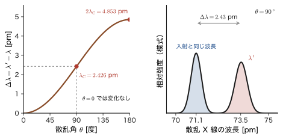
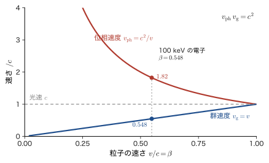
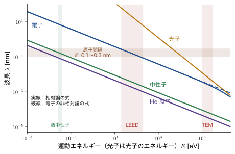
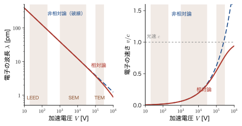
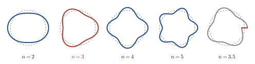
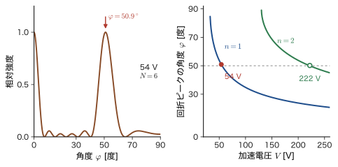

第6章Compton 散乱と物質波 — 光子の運動量から de Broglie の仮説・電子回折へ
光には，波としての顔と粒子（光子）としての顔がある．前の章までに，光電効果で光子のエネルギー $E=h\nu$ を確かめ，Bohr（ボーア）の模型で原子のとびとびの準位を学んだ．ところで，光子はエネルギーだけでなく運動量ももっているのだろうか．質量のない光が，ビリヤードの玉のように相手にぶつかって，相手を弾き飛ばせるのだろうか．1923 年，Compton（コンプトン）は X 線を炭素に当て，散乱された X 線の波長が入射した波長より長くなることを見いだした．古典的な電磁波の理論では，波長が変わる理由がない．ところが X 線を「エネルギー $h\nu$ と運動量 $h/\lambda$ をもつ粒」とみなして電子と衝突させると，観測された波長の変化がぴったり説明できる．光子が運動量をもつことの，決定的な実験的証拠である．
光が「波でもあり粒子でもある」ならば，逆に，電子のような粒子も「波でもある」のではないか．これが 1924 年に de Broglie（ド・ブロイ）が提出した大胆な仮説である．運動量 $p$ の粒子には，波長 $\lambda=h/p$ の波が伴う．100 V で加速した電子の波長を計算すると約 $0.12\ \mathrm{nm}$ になり，結晶の原子間隔と同じ程度である．したがって，結晶に電子を当てれば X 線のように回折が起こるはずである．実際に 1927 年，Davisson（デイヴィソン）と Germer（ガーマー），そして G. P. Thomson（トムソン）がそれを観測し，物質波の存在が実験で確かめられた．この電子の波動性は，いまでは電子顕微鏡，低速電子回折，中性子回折など，材料の構造を原子のスケールで調べる道具の土台になっている．
この章では，Compton 散乱を行を飛ばさずに導き，de Broglie の仮説を電子の波長の具体的な計算（単位換算と相対論的補正を含む）に結びつけ，Bohr の量子条件が定在波の条件として読めることを見る．最後に，回折の実験と応用を紹介する．古典物理（AD 03「大学基礎物理学」）では，波（光・音）と粒子（ボール・電子）は別の存在だった．ここでは，運動量 $p$ と波長 $\lambda$ を結ぶ 1 本の関係式 $p=h/\lambda$ が，その二つを一つにつなぐのである．また，第2章で残した問い「de Broglie の式の $\lambda$ は何の波長か」に，この章の最後で答える．
- 光子の運動量 $p=h/\lambda=\hbar k$ を，Compton 散乱の実験事実と，エネルギー保存・運動量保存からの導出 $\Delta\lambda=\dfrac{h}{m_{\mathrm e}c}(1-\cos\theta)$，Compton 波長 $\lambda_{\mathrm C}=2.426\ \mathrm{pm}$ で理解すること．反跳電子のエネルギーと Compton edge を計算できること
- de Broglie の関係 $\lambda=h/p$，$E=\hbar\omega$，$p=\hbar k$ の意味，位相速度 $c^2/v$ と群速度 $v$ の違い，物質波の波長の大きさ（野球ボールから電子・中性子・$\mathrm{C_{60}}$ まで）
- 加速電圧 $V$ の電子の波長 $\lambda[\mathrm{nm}]=1.2264/\sqrt{V[\mathrm{V}]}$ を，単位換算まで含めて導くこと．高電圧（電子顕微鏡）では相対論的な補正が必要なこと
- 円軌道の定在波の条件 $2\pi r=n\lambda$ から Bohr の量子条件 $m_{\mathrm e}vr=n\hbar$ が出ること，箱の中の定在波から準位の量子化が理解できること
- Davisson–Germer の実験（$54\ \mathrm{V}$，$50^\circ$，$D\sin\varphi=n\lambda$）と G. P. Thomson の Debye–Scherrer（デバイ–シェラー）環（$R=L\tan2\theta$）から，電子の波長を実験と比べること
- 電子顕微鏡の分解能，LEED・RHEED，中性子回折で物質波がどう使われるか．平面波 $e^{ikx}$ の $\lambda=2\pi/k$ が de Broglie 波長であること（第2章の問いへの答え）
もとにしたノート：望月泰英『物理学ノート 量子力学1』 p. 13，『物理学ノート 量子力学2』 p. 1．
6.1 光子の運動量の証拠 — Compton 散乱（1923）
6.1.1 光子のエネルギーと運動量 — Planck–Einstein の関係の再確認
まず，第4章（4.4 節）で導入した，光子と電磁波を結びつける関係を復習しておこう．光量子（光子，photon）に関する量には添字 $\mathrm{ph}$ を，それに対応する電磁輻射（電磁波，electromagnetic wave）に関する量には添字 $\mathrm{em}$ を付けて区別する．電磁波の振動数を $\nu_{\mathrm{em}}$，波長を $\lambda_{\mathrm{em}}$，角振動数を $\omega_{\mathrm{em}}=2\pi\nu_{\mathrm{em}}$，波数ベクトル $\bm{k}_{\mathrm{em}}$（波の進む向きを向き，単位長さあたりに位相が進む量．単位は rad/m）の大きさを $k_{\mathrm{em}}=\abs{\bm{k}_{\mathrm{em}}}=2\pi/\lambda_{\mathrm{em}}$ とする．$\hbar$（エイチバー）は $h/2\pi$ である．
法則6.1 Planck–Einstein の関係（法則4.3 の再掲）
光子のエネルギー $E_{\mathrm{ph}}$ と運動量の大きさ $p_{\mathrm{ph}}$ は，対応する電磁波の振動数・波長・波数で次のように表される．
\begin{align} E_{\mathrm{ph}}&=h\nu_{\mathrm{em}}=\hbar\omega_{\mathrm{em}} \qquad(\because\ \omega_{\mathrm{em}}=2\pi\nu_{\mathrm{em}},\ \ \hbar=\frac{h}{2\pi}) \label{eq:6-planck}\\ p_{\mathrm{ph}}&=\frac{h\nu_{\mathrm{em}}}{c}=\frac{h\nu_{\mathrm{em}}}{\lambda_{\mathrm{em}}\nu_{\mathrm{em}}}=\frac{h}{\lambda_{\mathrm{em}}}=\hbar k_{\mathrm{em}} \qquad(\because\ k_{\mathrm{em}}=\frac{2\pi}{\lambda_{\mathrm{em}}}) \label{eq:6-pphoton} \end{align}運動量はベクトルなので，向きまで含めると $\bm{p}_{\mathrm{ph}}=\hbar\bm{k}_{\mathrm{em}}$ である（光子の運動量の向きは電磁波の進む向き）．
式 \eqref{eq:6-pphoton} の 1 段目の $p_{\mathrm{ph}}=E_{\mathrm{ph}}/c$ は，Maxwell の輻射圧と相対論の 2 通りの導出がある（4.4.2 節）．2 段目以降は，波の基本関係 $c=\lambda_{\mathrm{em}}\nu_{\mathrm{em}}$ を使った書き換えと $\nu_{\mathrm{em}}$ の約分，$h/\lambda_{\mathrm{em}}=\dfrac{h}{2\pi}\cdot\dfrac{2\pi}{\lambda_{\mathrm{em}}}=\hbar k_{\mathrm{em}}$ である．この 2 本の式が，波の量 $(\nu,\lambda)$ と粒子の量 $(E,p)$ を対応させる「辞書」になっている．
6.1.2 光には運動量がある — 質量のない光の運動量
光子には静止質量がないのに運動量 $p=h/\lambda$ をもつ．光が運動量をもつことは，Compton の実験（次節）より前から，Maxwell の電磁気学の輻射圧（電磁波の運動量 $P=U/c$）からわかっていた．厳密には，相対論の関係 $E^2=(pc)^2+(mc^2)^2$（大学基礎物理学 第57章 57.5）に $m=0$ を代入して $p=E/c$ を得る．$p=mc^2/c=E/c$ という式変形の意味と限界を含め，導出は第4章 4.4.2 節で述べた．
光子の運動量は非常に小さい．波長 $550\ \mathrm{nm}$ の可視光の光子で $p=h/\lambda=(6.626\times10^{-34}\ \mathrm{J\,s})/(550\times10^{-9}\ \mathrm{m})=1.2\times10^{-27}\ \mathrm{kg\,m/s}$ である．これに対し，波長 $71.1\ \mathrm{pm}$（$=7.11\times10^{-11}\ \mathrm{m}$）の X 線光子では $p=9.3\times10^{-24}\ \mathrm{kg\,m/s}$ と，約 $7.7\times10^{3}$ 倍大きい．運動量は波長に反比例するので，運動量の効果は波長の短い X 線・$\gamma$ 線でよく見える．これが，次節の Compton の実験で X 線が使われた理由である．
6.1.3 Compton の実験（1923）
Compton は，単色の X 線（Mo の $\mathrm{K}\alpha$ 線，波長 $71.1\ \mathrm{pm}$）を黒鉛（炭素）の標的に当て，いろいろな角度 $\theta$ に散乱された X 線の波長を，結晶による Bragg 反射（大学基礎物理学 第16章 16.7）を使った分光器で測定した．結果は次のとおりであった．
- 散乱 X 線には，入射 X 線と同じ波長 $\lambda$ の成分と，それより長い波長 $\lambda'$ の成分の 2 本が現れる．
- 長い波長の成分の波長のずれ $\Delta\lambda=\lambda'-\lambda$ は，散乱角 $\theta$ が大きいほど大きい．$\theta=0$ ではずれはない．
- このずれは，入射 X 線の波長 $\lambda$ にも，散乱体の物質にもよらない．
古典的な電磁波の理論では，これは説明できない．入射した電磁波の電場が電子を入射波と同じ振動数で振動させ，振動する電子が同じ振動数の電磁波を放射する（Thomson 散乱．電子の発見者 J. J. Thomson にちなむ名前である）と考えると，散乱波の波長は入射波と同じになるはずだからである．波長が長くなる成分が現れることは，「光が波」という描像だけでは理解できない．
そこで Compton（と，独立に Debye）は，X 線を，エネルギー $E=hc/\lambda$，運動量 $p=h/\lambda$ をもつ光子とみなし，これが静止した自由電子と弾性衝突すると考えた．光子が電子にエネルギーと運動量の一部を与えれば，散乱された光子のエネルギーは減り，波長は長くなる．次項でこの衝突を，エネルギー保存の 1 本と運動量保存の 2 成分（入射方向とそれに垂直な方向）の，合わせて 3 本の式から解く．なお，Compton はこの功績で 1927 年に Nobel 賞を受けた．
6.1.4 光子と自由電子の衝突 — Compton の式の導出
衝突の設定を決める．散乱前，電子は静止しており（エネルギー $m_{\mathrm e}c^2$，運動量 $0$），入射光子の波長は $\lambda$（エネルギー $hc/\lambda$，運動量 $h/\lambda$，向きは $x$ 軸の正の向き）である．散乱後，光子は波長 $\lambda'$ になって入射方向から角 $\theta$ の向きに進み，電子は運動量 $p_{\mathrm e}$ をもって入射方向から反対側に角 $\varphi$ の向きに飛び出す（図6.1）．本章では，$\varphi$ を，この節（6.1 節）では Compton 散乱の電子の反跳角，6.5 節では Davisson–Germer の実験の回折角に，それぞれ別の量として使う（球座標の方位角の意味では使わない）．$\gamma$ 線のように光子のエネルギーが大きい場合，電子は光速に近い速さで反跳する（X 線の場合でも光速の数 % になる）．そこで，どちらにも通用する結果を得るため，電子のエネルギーを相対論の式 $E_{\mathrm e}=\sqrt{(p_{\mathrm e}c)^2+(m_{\mathrm e}c^2)^2}$（大学基礎物理学 第57章 57.5）で表す．未知数は $\lambda'$，$p_{\mathrm e}$，$\varphi$ の 3 個，条件は，運動量保存（$x$ 成分と $y$ 成分の 2 本）とエネルギー保存（1 本）の 3 本である．
導出：Compton の式 $\Delta\lambda=\dfrac{h}{m_{\mathrm e}c}(1-\cos\theta)$
[i] 運動量保存．$x$ 成分（入射方向）と $y$ 成分（それに垂直な方向）を別々に書く．
\begin{align} \frac{h}{\lambda}&=\frac{h}{\lambda'}\cos\theta+p_{\mathrm e}\cos\varphi \label{eq:6-cons-x}\\ 0&=\frac{h}{\lambda'}\sin\theta-p_{\mathrm e}\sin\varphi \label{eq:6-cons-y} \end{align}ここで $\varphi$ は消去したい未知数である．そこで $\cos\varphi$ と $\sin\varphi$ を含む項を左辺に残すように書き直す：
$$ p_{\mathrm e}\cos\varphi=\frac{h}{\lambda}-\frac{h}{\lambda'}\cos\theta,\qquad p_{\mathrm e}\sin\varphi=\frac{h}{\lambda'}\sin\theta $$両辺を 2 乗して辺々足すと，$\cos^2\varphi+\sin^2\varphi=1$ より左辺は $p_{\mathrm e}^2$ になる．右辺の第 1 式の 2 乗を展開すると，
$$ p_{\mathrm e}^2=\frac{h^2}{\lambda^2}-\frac{2h^2}{\lambda\lambda'}\cos\theta+\frac{h^2}{\lambda'^2}\cos^2\theta+\frac{h^2}{\lambda'^2}\sin^2\theta =\frac{h^2}{\lambda^2}+\frac{h^2}{\lambda'^2}-\frac{2h^2\cos\theta}{\lambda\lambda'} $$（最後で $\cos^2\theta+\sin^2\theta=1$ を使った）．エネルギーの式と単位をそろえるため，両辺に $c^2$ を掛けておく：
\begin{equation} p_{\mathrm e}^2c^2=(hc)^2\left[\frac{1}{\lambda^2}+\frac{1}{\lambda'^2}-\frac{2\cos\theta}{\lambda\lambda'}\right] \label{eq:6-pe2} \end{equation}[ii] エネルギー保存．散乱前のエネルギーは，光子 $hc/\lambda$ と静止した電子 $m_{\mathrm e}c^2$ の和，散乱後は光子 $hc/\lambda'$ と電子 $E_{\mathrm e}$ の和である．
$$ \frac{hc}{\lambda}+m_{\mathrm e}c^2=\frac{hc}{\lambda'}+E_{\mathrm e},\qquad E_{\mathrm e}^2=p_{\mathrm e}^2c^2+m_{\mathrm e}^2c^4 $$$E_{\mathrm e}$ を消すために，$\dfrac{hc}{\lambda'}$ を左辺に移して 2 乗する：
$$ \left(\frac{hc}{\lambda}-\frac{hc}{\lambda'}+m_{\mathrm e}c^2\right)^2=p_{\mathrm e}^2c^2+m_{\mathrm e}^2c^4 $$左辺を $(a+b)^2=a^2+2ab+b^2$（$a=hc/\lambda-hc/\lambda'$，$b=m_{\mathrm e}c^2$）で展開し，両辺の $m_{\mathrm e}^2c^4$ を打ち消すと，
\begin{equation} (hc)^2\left(\frac{1}{\lambda}-\frac{1}{\lambda'}\right)^2+2m_{\mathrm e}c^2\cdot hc\left(\frac{1}{\lambda}-\frac{1}{\lambda'}\right)=p_{\mathrm e}^2c^2 \label{eq:6-econs} \end{equation}[iii] $p_{\mathrm e}$ の消去．式 \eqref{eq:6-econs} の右辺に式 \eqref{eq:6-pe2} を代入する．左辺の $\left(\dfrac{1}{\lambda}-\dfrac{1}{\lambda'}\right)^2=\dfrac{1}{\lambda^2}-\dfrac{2}{\lambda\lambda'}+\dfrac{1}{\lambda'^2}$ のうち，$\dfrac{1}{\lambda^2}$ と $\dfrac{1}{\lambda'^2}$ は右辺と同じなので打ち消し合い，残りは
$$ -\frac{2(hc)^2}{\lambda\lambda'}+2m_{\mathrm e}c^2\cdot hc\left(\frac{1}{\lambda}-\frac{1}{\lambda'}\right)=-\frac{2(hc)^2\cos\theta}{\lambda\lambda'} $$となる．$\dfrac{1}{\lambda}-\dfrac{1}{\lambda'}=\dfrac{\lambda'-\lambda}{\lambda\lambda'}$ と書き，両辺に $\dfrac{\lambda\lambda'}{2hc^2}$ を掛けると，
$$ -h+m_{\mathrm e}c\,(\lambda'-\lambda)=-h\cos\theta $$となる．$\lambda'-\lambda$ について解けば，
\begin{equation} \Delta\lambda\equiv\lambda'-\lambda=\frac{h}{m_{\mathrm e}c}(1-\cos\theta) \label{eq:6-compton} \end{equation}（導出終わり）
定理6.1 Compton の式
波長 $\lambda$ の光子が静止した自由電子に散乱され，入射方向から角 $\theta$ の向きに進むとき，散乱光子の波長 $\lambda'$ は
\begin{equation} \lambda'-\lambda=\lambda_{\mathrm C}\,(1-\cos\theta)=2\lambda_{\mathrm C}\sin^2\frac{\theta}{2},\qquad \lambda_{\mathrm C}\equiv\frac{h}{m_{\mathrm e}c}=2.426\,310\,238\,67\times10^{-12}\ \mathrm{m}\approx2.426\ \mathrm{pm} \label{eq:6-comptonC} \end{equation}である．$\lambda_{\mathrm C}$ を電子の Compton 波長という．波長の変化 $\Delta\lambda$ は $\theta$ だけで決まり，入射光子の波長 $\lambda$ にはよらない．
2 番目の等号は，半角の公式 $1-\cos\theta=2\sin^2(\theta/2)$ である．次元を確かめておく．$h/(m_{\mathrm e}c)$ の単位は $\dfrac{\mathrm{J\,s}}{\mathrm{kg}\cdot\mathrm{m/s}}=\dfrac{\mathrm{kg\,m^2/s}}{\mathrm{kg\,m/s}}=\mathrm{m}$ で，たしかに長さである．数値は $\lambda_{\mathrm C}=\dfrac{6.626\,070\,15\times10^{-34}}{9.109\,383\,7015\times10^{-31}\times2.997\,924\,58\times10^{8}}\ \mathrm{m}=2.4263\times10^{-12}\ \mathrm{m}$ である．
Compton 波長の意味．光子のエネルギー $hc/\lambda$ がちょうど電子の静止エネルギー $m_{\mathrm e}c^2=0.511\ \mathrm{MeV}$ に等しいとき，その波長は $\lambda=hc/(m_{\mathrm e}c^2)=h/(m_{\mathrm e}c)=\lambda_{\mathrm C}$ である．つまり $\lambda_{\mathrm C}$ は「電子の質量に対応する光子の波長」であり，光子の波長が $\lambda_{\mathrm C}$ 程度になると，電子との衝突で光子のエネルギーが大きく変わるようになる．なお $\lambda_{\mathrm C}$ を $2\pi$ で割った $\hbar/(m_{\mathrm e}c)=0.386\ \mathrm{pm}$ を（換算）Compton 波長と呼ぶこともある．
反跳電子の向き．式 \eqref{eq:6-cons-x}，\eqref{eq:6-cons-y} の比をとると，電子が飛び出す角 $\varphi$ もわかる．$\tan\varphi=\dfrac{p_{\mathrm e}\sin\varphi}{p_{\mathrm e}\cos\varphi}=\dfrac{(h/\lambda')\sin\theta}{h/\lambda-(h/\lambda')\cos\theta}=\dfrac{\sin\theta}{\lambda'/\lambda-\cos\theta}$ で，$\lambda'/\lambda=1+\dfrac{\lambda_{\mathrm C}}{\lambda}(1-\cos\theta)$ を代入すると分母は $(1-\cos\theta)\left(1+\dfrac{\lambda_{\mathrm C}}{\lambda}\right)$ となる．$\dfrac{\sin\theta}{1-\cos\theta}=\cot\dfrac{\theta}{2}$ を使うと，
\begin{equation} \tan\varphi=\frac{\cot(\theta/2)}{1+\lambda_{\mathrm C}/\lambda} \label{eq:6-tanphi} \end{equation}を得る．入射光子の波長が長い（$\lambda\gg\lambda_{\mathrm C}$）と $\tan\varphi\approx\cot(\theta/2)$，すなわち $\varphi\approx90^\circ-\theta/2$ である．
6.1.5 Compton シフトの性質 — 何が観測され，何が観測されにくいか
式 \eqref{eq:6-comptonC} を，散乱角ごとに読んでみよう（図6.2(左)）．
- $\theta=0$（前方，光子が電子に触れずに素通りする場合）：$\Delta\lambda=0$．波長は変わらない．
- $\theta=90^\circ$：$\cos90^\circ=0$ なので $\Delta\lambda=\lambda_{\mathrm C}=2.426\ \mathrm{pm}$．
- $\theta=180^\circ$（真後ろへの散乱）：$\cos180^\circ=-1$ なので $\Delta\lambda=2\lambda_{\mathrm C}=4.853\ \mathrm{pm}$．これが最大である．
$\Delta\lambda$ の値は，入射光子の波長 $\lambda$ に関係なく，すべて数 pm 以内である．したがって波長のずれが目に見えるかどうかは，「ずれの割合 $\Delta\lambda/\lambda$」で決まる．最大の割合は $2\lambda_{\mathrm C}/\lambda$ である．波長 $550\ \mathrm{nm}$ の可視光では $2\lambda_{\mathrm C}/\lambda=8.8\times10^{-6}$，つまり百万分の 9 程度しか変わらず，ふつうの分光器では観測できない．一方，$\lambda=71.1\ \mathrm{pm}$ の X 線では最大 $6.8\ \%$ も変わる．Compton が X 線を用いたのはこのためであり，可視光の散乱では「光子が運動量をもって電子を弾き飛ばす」効果が波長の変化としては見えないだけである．

反跳電子のエネルギー．エネルギー保存から，電子が得る運動エネルギー $T=E_{\mathrm e}-m_{\mathrm e}c^2$ は，光子が失ったエネルギーに等しい（本章では，相対論の式 $E=T+m_{\mathrm e}c^2$ との対応がよいように，運動エネルギーを第4章・第5章の $K$ でなく $T$ と書く．温度は $k_{\mathrm B}T$ の形で書いて区別する）：
\begin{equation} T=\frac{hc}{\lambda}-\frac{hc}{\lambda'}=\frac{hc\,\Delta\lambda}{\lambda\lambda'} \label{eq:6-Trecoil} \end{equation}光子のエネルギーを $E=hc/\lambda$，散乱光子のエネルギーを $E'=hc/\lambda'$ と書くと，式 \eqref{eq:6-comptonC} の両辺に $1/(hc)$ を掛ける（$\lambda_{\mathrm C}/(hc)=1/(m_{\mathrm e}c^2)$ に注意）ことで，$\dfrac{1}{E'}=\dfrac{1}{E}+\dfrac{1-\cos\theta}{m_{\mathrm e}c^2}$，すなわち
\begin{equation} E'=\frac{E}{1+\varepsilon(1-\cos\theta)},\qquad \varepsilon\equiv\frac{E}{m_{\mathrm e}c^2} \label{eq:6-Eprime} \end{equation}が得られる（$\varepsilon$ は入射光子のエネルギーを電子の静止エネルギーで割った無次元量）．$E'$ は $\theta=180^\circ$ で最小になり，このとき電子が得るエネルギーが最大になる：
\begin{equation} T_{\max}=E-E'_{\min}=E\,\frac{2\varepsilon}{1+2\varepsilon}=\frac{2E^2}{2E+m_{\mathrm e}c^2} \label{eq:6-Tmax} \end{equation}$E\ll m_{\mathrm e}c^2$（可視光や軟 X 線）では $T_{\max}\approx2E^2/(m_{\mathrm e}c^2)$ と小さく，$E$ が大きい $\gamma$ 線では光子のエネルギーの大部分を電子に渡す．
例題6.1 Mo K$\alpha$ 線の Compton 散乱
波長 $\lambda=71.1\ \mathrm{pm}$ の X 線が自由電子に散乱され，$\theta=90^\circ$ の向きに進んだ．(1) 散乱 X 線の波長 $\lambda'$，(2) 反跳電子の運動エネルギー $T$，(3) 反跳電子の飛び出す角 $\varphi$，を求めよ．
解答 (1) 式 \eqref{eq:6-comptonC} で $\cos90^\circ=0$ なので $\Delta\lambda=\lambda_{\mathrm C}=2.426\ \mathrm{pm}$．よって $\lambda'=71.1+2.426=73.53\ \mathrm{pm}$ である．
(2) 式 \eqref{eq:6-Trecoil} を，$hc=1239.84\ \mathrm{eV\,nm}$ を使って計算する．長さは nm で統一して，$\lambda=0.0711\ \mathrm{nm}$，$\lambda'=0.073526\ \mathrm{nm}$，$\Delta\lambda=0.002426\ \mathrm{nm}$ である．
$$ T=\frac{hc\,\Delta\lambda}{\lambda\lambda'}=\frac{1239.84\ \mathrm{eV\,nm}\times0.002426\ \mathrm{nm}}{0.0711\ \mathrm{nm}\times0.073526\ \mathrm{nm}}=\frac{3.0083\ \mathrm{eV\,nm^2}}{5.2277\times10^{-3}\ \mathrm{nm^2}}=575\ \mathrm{eV} $$入射光子のエネルギー $hc/\lambda=1239.84/0.0711=17.44\ \mathrm{keV}$ のうち，わずか $0.575\ \mathrm{keV}$（約 $3.3\ \%$）が電子に移る．電子の速さは $v=\sqrt{2T/m_{\mathrm e}}\approx0.05c$ で，光速よりずっと小さい．
(3) 式 \eqref{eq:6-tanphi} で $\cot45^\circ=1$，$\lambda_{\mathrm C}/\lambda=2.426/71.1=0.03412$ だから，$\tan\varphi=\dfrac{1}{1.03412}=0.9670$，すなわち $\varphi=44.0^\circ$ である（電子は入射方向から，光子とは反対側に約 $44^\circ$ の向きに飛び出す）．
例題6.2 可視光と X 線，Cs-137 の $\gamma$ 線の Compton edge
(1) 波長 $550\ \mathrm{nm}$ の可視光と，波長 $71.1\ \mathrm{pm}$ の X 線について，Compton 散乱による波長変化の割合 $\Delta\lambda/\lambda$ の最大値を求め，可視光では観測が難しい理由を述べよ．(2) $^{137}\mathrm{Cs}$ が出す $\gamma$ 線（エネルギー $662\ \mathrm{keV}$）が電子に与えるエネルギーの最大値（Compton edge）と，そのとき後方へ散乱される光子のエネルギーを求めよ．$m_{\mathrm e}c^2=511.0\ \mathrm{keV}$ とする．
解答 (1) $\Delta\lambda$ の最大値は $2\lambda_{\mathrm C}=4.853\ \mathrm{pm}$ である．可視光では $\dfrac{4.853\times10^{-12}\ \mathrm{m}}{550\times10^{-9}\ \mathrm{m}}=8.8\times10^{-6}$，X 線では $\dfrac{4.853\ \mathrm{pm}}{71.1\ \mathrm{pm}}=0.068=6.8\ \%$ である．可視光の波長は $10^{-5}$ の桁でしか変わらないので，通常の分光器の分解能では，入射光と散乱光の波長の違いは見えない．
(2) $\varepsilon=E/(m_{\mathrm e}c^2)=662/511.0=1.2955$ である．後方散乱（$\theta=180^\circ$，$1-\cos\theta=2$）の光子のエネルギーは式 \eqref{eq:6-Eprime} より
$$ E'=\frac{662\ \mathrm{keV}}{1+2\times1.2955}=\frac{662\ \mathrm{keV}}{3.5910}=184.3\ \mathrm{keV} $$電子が得るエネルギーは，エネルギー保存より $T_{\max}=662-184.3=477.7\ \mathrm{keV}$ である．式 \eqref{eq:6-Tmax} の $2E^2/(2E+m_{\mathrm e}c^2)=2\times662^2/(2\times662+511.0)=876\,488/1835.0=477.7\ \mathrm{keV}$ とも一致する．シンチレーション検出器などで $\gamma$ 線を測ると，光子のエネルギーの全部が吸収された光電ピーク（$662\ \mathrm{keV}$）のほかに，Compton 散乱で光子が検出器から逃げた場合に電子のエネルギーだけが記録される連続部分が現れ，その上限が $477.7\ \mathrm{keV}$ に鋭い端（Compton edge）をつくる．（この $\gamma$ 線の正確なエネルギーは $661.66\ \mathrm{keV}$ で，このときの Compton edge は $477.3\ \mathrm{keV}$ である．）
6.1.6 波長が変わらない成分は何か
Compton の実験では，長波長側の成分（Compton シフトした成分）のほかに，入射と同じ波長の成分も現れた（図6.2(右)）．この成分は，電子が原子に強く束縛されていて，光子が原子全体を反跳させる散乱に対応する．衝突の相手の質量が $m_{\mathrm e}$ から原子の質量 $M$ に変わるだけなので，式 \eqref{eq:6-comptonC} の $m_{\mathrm e}$ を $M$ で置き換えればよい．炭素原子の質量は電子の約 $2.2\times10^4$ 倍（$12\ \mathrm{u}=12\times1.6605\times10^{-27}\ \mathrm{kg}=1.99\times10^{-26}\ \mathrm{kg}$ を $m_{\mathrm e}=9.109\times10^{-31}\ \mathrm{kg}$ で割った）なので，波長のずれは $\theta=90^\circ$ で $2.4\ \mathrm{pm}/(2.2\times10^{4})=1.1\times10^{-4}\ \mathrm{pm}$，最大の $\theta=180^\circ$ でも $2.2\times10^{-4}\ \mathrm{pm}$ にすぎず，観測にかからない．こうして，同じ波長の成分が残る．
応用：Compton 散乱で電子の運動量分布を測る
実際の固体の中の電子は静止していないので，散乱 X 線・$\gamma$ 線の波長は式 \eqref{eq:6-comptonC} の値のまわりに広がる（Doppler 効果と同じ原理）．この広がりの形（Compton profile）は，物質中の電子の運動量の分布を反映する．Fermi 面や電子状態の運動量分布を調べる実験手法として，材料研究に使われている．また，医療・産業の $\gamma$ 線検出や，放射線を使った非破壊検査でも Compton 散乱の運動学（式 \eqref{eq:6-Eprime}）が基本になる．
考察：保存則は 1 回ごとの衝突で成り立つ
「エネルギー保存と運動量保存は，多数の衝突の平均でだけ成り立つのではないか」という疑問が，当時には真剣に議論された．1925 年に，Bothe（ボーテ）と Geiger（ガイガー）が同時計数法で，Compton と Simon（サイモン）が霧箱で，散乱光子と反跳電子の関係を調べ，1 回の衝突で光子と電子が同時に現れ，エネルギーと運動量が保存されることを確かめた．光子が運動量とエネルギーを個々の衝突で電子に渡すという粒子的な描像が，実験で裏づけられたのである．
Compton 散乱の運動学は，AD 03 では 4 元運動量の保存則を使って短く導いている（大学基礎物理学 第57章 57.9）．エネルギーと運動量を 1 つの 4 元ベクトルにまとめると，本節の 3 本の式が 1 本の式にまとまり，同じ結果 \eqref{eq:6-compton} が出る．散乱の断面積（どの角度にどれだけ散乱されるか）は，Dirac の相対論的電子論を使って 1929 年に Klein（クライン）と仁科芳雄が求めた式（Klein–Nishina の式）で与えられ，量子電磁力学（QED）の最初の応用の一つとなったが，これは本書の範囲を越える（素粒子物理学（AD 09））．
6.2 de Broglie の仮説（1924）— 粒子も波である
6.2.1 光の二重性から，物質の二重性へ
Compton 散乱によって，光は「波でありながら，エネルギー $E=h\nu$ と運動量 $p=h/\lambda$ をもつ粒子でもある」ことが確かめられた．波の量（振動数 $\nu$，波長 $\lambda$）と粒子の量（エネルギー $E$，運動量 $p$）が，Planck 定数 $h$ を介して結ばれているのである（法則6.1）．
1924 年，フランスの de Broglie（ド・ブロイ）は，学位論文の中で次のように考えた．自然が対称的にできているなら，この関係は光だけの特別なものではなく，電子のような質量をもつ粒子にも成り立つのではないか．つまり，電子が波の性質をもつなら，電子についても $p=h/\lambda$ となるのではないか．
法則6.2 de Broglie の関係（物質波の仮説）
運動量 $\bm{p}$，エネルギー $E$ をもつ自由な粒子（電子，中性子，原子，分子など）には，次の波長・波数・振動数をもつ平面波が伴う．
\begin{equation} \lambda=\frac{h}{p},\qquad \bm{p}=\hbar\bm{k}\ \ \left(k=\frac{2\pi}{\lambda}\right),\qquad E=h\nu=\hbar\omega \label{eq:6-debroglie} \end{equation}この波を物質波（matter wave）または de Broglie 波，$\lambda$ を de Broglie 波長という．
式 \eqref{eq:6-debroglie} は，光子に対する式 \eqref{eq:6-planck}，\eqref{eq:6-pphoton} と全く同じ形をしている．違いは，光では $\lambda$ が電磁波の波長だったのに対し，ここでは粒子の運動量 $p$ を与えて，「粒子に伴う波」の波長を定義した点である．運動量の大きさが $p=\abs{\bm{p}}=mv$（非相対論的な粒子で）であれば，$\lambda=h/(mv)$ である．
なお，$E=h\nu=\hbar\omega$ の $E$ は，相対論では静止エネルギー $mc^2$ を含む全エネルギー $E=\gamma mc^2$ である（6.2.2 節）．非相対論の近似では運動エネルギー $p^2/2m$ だけを使うことが多い．どちらを使うかで角振動数 $\omega$ の原点がずれて位相速度の値は変わるが，波長 $\lambda=h/p$ は変わらない（6.2.2 節の注意）．
イメージ：光の関係を逆向きに読む
Compton 散乱では，「波長 $\lambda$ の波」を「運動量 $h/\lambda$ の粒」と読み替えた．de Broglie の仮説は，これを逆向きに読む．すなわち，「運動量 $p$ の粒」を「波長 $h/p$ の波」と読み替える．運動量が大きいほど波長は短く，運動量が小さいほど波長は長い．われわれの日常の物体は運動量が桁違いに大きい（質量が大きい）ので，波長が極端に短く，波の性質が見えない．電子は質量が小さいので，原子間隔の程度の波長の波として振る舞うことが 6.2.3 節でわかる．
この仮説は，実験の裏づけなしに提出された．しかし de Broglie 自身は，電子の流れが小さな孔や結晶を通ると，光と同じように回折を示すはずだと予想していた．それが 1927 年の実験（6.5 節）で確かめられ，de Broglie は 1929 年に Nobel 賞を受けた．
Bohr の理論に始まる前期量子論の限界は第5章で見た（5.6.3 節）．その乗り越えは，1920 年代後半の de Broglie の物質波，Schrödinger（シュレーディンガー）の波動力学（第9章），Heisenberg（ハイゼンベルク）の行列力学によって行われた．この章は，その出発点である de Broglie の物質波を扱う．
6.2.2 de Broglie の論法 — 位相速度と群速度
粒子に波を対応させると，すぐに疑問が生じる．波には「位相が進む速さ」（位相速度）と「波束が進む速さ」（群速度）があった（大学基礎物理学 第17章 17.5）．波長がわずかに違う波を重ね合わせると，局在した波束ができる．波束の中心は群速度 $v_{\mathrm g}=\dd\omega/\dd k$ で進む．粒子は 1 か所に局在して速さ $v$ で動くのだから，粒子の速さ $v$ と比べるべきなのは，位相の進みではなく波束の速さ $v_{\mathrm g}$ である．それでは，粒子に対応する波の何の速さが $v$ になるのだろうか．de Broglie の関係 \eqref{eq:6-debroglie} と，相対論的なエネルギーと運動量の関係から確かめよう．
考察：なぜ $E$ と $p$ を同時に波に対応させるのか
光子では $(E/c,\ p)=\hbar\,(\omega/c,\ k)$ と，エネルギーと運動量が波の $(\omega/c,\ k)$ に 1 対 1 で対応している．波の位相 $kx-\omega t$ は座標系によらない（ローレンツ変換で変わらない）スカラーなので，$(\omega/c,\ k)$ は，$(E/c,\ p)$ と同じ 4 元ベクトルとして座標変換される（大学基礎物理学 第57章 57.5）．したがって，質量のある粒子にも $E=\hbar\omega$ と $p=\hbar k$ を対にして仮定するのが，相対論と矛盾しない拡張である．どちらか一方だけを仮定すると，座標系を変えたときに関係が保たれない．
導出：物質波の位相速度と群速度
質量 $m$，速さ $v$ の粒子のエネルギーと運動量は，相対論では $E=\gamma mc^2$，$p=\gamma mv$（$\gamma=1/\sqrt{1-v^2/c^2}$）で，$E^2=p^2c^2+m^2c^4$ の関係を満たす（大学基礎物理学 第57章 57.5）．式 \eqref{eq:6-debroglie} より $\omega=E/\hbar$，$k=p/\hbar$ である．
位相速度は $v_{\mathrm{ph}}=\dfrac{\omega}{k}=\dfrac{E}{p}$ で，$E=\gamma mc^2$，$p=\gamma mv$ を代入すると，
\begin{equation} v_{\mathrm{ph}}=\frac{\gamma mc^2}{\gamma mv}=\frac{c^2}{v} \label{eq:6-vph} \end{equation}である（$\gamma m$ が約分される）．$v\lt c$ なので $v_{\mathrm{ph}}\gt c$ となる．
群速度は $v_{\mathrm g}=\dfrac{\dd\omega}{\dd k}=\dfrac{\dd E}{\dd p}$ である．$E^2=p^2c^2+m^2c^4$ の両辺を $p$ で微分すると，$2E\dfrac{\dd E}{\dd p}=2pc^2$ なので，
\begin{equation} v_{\mathrm g}=\frac{\dd E}{\dd p}=\frac{pc^2}{E}=\frac{\gamma mv\,c^2}{\gamma mc^2}=v \label{eq:6-vg} \end{equation}を得る．非相対論の極限（$E=mc^2+p^2/2m$）でも $\dd E/\dd p=p/m=v$ で同じ結果である．
式 \eqref{eq:6-vph}，\eqref{eq:6-vg} から，$v_{\mathrm{ph}}\,v_{\mathrm g}=c^2$ という関係も成り立つ．
（導出終わり）
群速度 \eqref{eq:6-vg} が粒子の速さ $v$ に等しいことは，「粒子の位置は物質波の波束（波が集まって局在した部分）の位置に対応する」と考えれば，物質波の描像が粒子の運動と矛盾しないことを意味する．波束の中心（エネルギーが運ばれる速さ）は，粒子と同じ速さ $v$ で進むのである．

注意：位相速度が光速を超えても，相対論には反しない
式 \eqref{eq:6-vph} は $v_{\mathrm{ph}}=c^2/v\gt c$ で，位相の進む速さが光速を超える．しかし，単一の波長の無限に続く波の「位相」の進みは，情報もエネルギーも運ばない．なぜなら，物理的な信号やエネルギーは，波が集まった波束の形（波の強さの変化）で運ばれ，その速さは群速度 $v_{\mathrm g}=v\lt c$ だからである．したがって，特殊相対論とは矛盾しない．ちなみに，非相対論の粒子（$E=p^2/2m$，静止エネルギーを除いたエネルギー）では $v_{\mathrm{ph}}=E/p=p/2m=v/2$ となり，エネルギーの原点の選び方（静止エネルギーを含めるか）で位相速度の値が変わってしまう．位相速度そのものは測定できる量ではなく，群速度が観測にかかる量である．
例題6.3 運動エネルギー $100\ \mathrm{keV}$ の電子の位相速度と群速度
運動エネルギー $100\ \mathrm{keV}$ の電子の速さ $v$，位相速度 $v_{\mathrm{ph}}$，群速度 $v_{\mathrm g}$ を，光速 $c$ を単位として求めよ．電子の静止エネルギーは $m_{\mathrm e}c^2=511.0\ \mathrm{keV}$ とする．
解答 全エネルギーは $E=T+m_{\mathrm e}c^2=100+511.0=611.0\ \mathrm{keV}$ で，$\gamma=E/(m_{\mathrm e}c^2)=611.0/511.0=1.1957$ である．速さは $\gamma=1/\sqrt{1-\beta^2}$ より $\beta^2=1-1/\gamma^2=1-1/1.4297=1-0.6994=0.3006$，すなわち $\beta=v/c=0.5482$ である．したがって群速度は式 \eqref{eq:6-vg} より $v_{\mathrm g}=v=0.548c=1.64\times10^8\ \mathrm{m/s}$，位相速度は式 \eqref{eq:6-vph} より $v_{\mathrm{ph}}=c/\beta=1.824c=5.47\times10^8\ \mathrm{m/s}$ である．積は $v_{\mathrm{ph}}v_{\mathrm g}=1.824c\times0.548c=c^2$ となり確認できる．位相速度は光速の 1.8 倍だが，これは波の位相の進みであって信号の速さではない（上の注意）．エネルギーと粒子が運ばれる速さは，光速より小さい $0.548c$ である．
6.2.3 物質波の波長はどれくらいの大きさか
$\lambda=h/p$ に数値を入れて，どの物体で波動性が見えるのかを確かめよう．Planck 定数が $h=6.626\times10^{-34}\ \mathrm{J\,s}$ と極端に小さいので，波長が原子の大きさ（約 $10^{-10}\ \mathrm{m}$）程度になるには，運動量 $p=h/\lambda$ が $6.6\times10^{-24}\ \mathrm{kg\,m/s}$ 程度という非常に小さな値でなければならない．
例題6.4 いろいろな物体の de Broglie 波長
次の物体の de Broglie 波長を求めよ．(a) 野球のボール（質量 $0.145\ \mathrm{kg}$，速さ $40\ \mathrm{m/s}$），(b) 人（$70\ \mathrm{kg}$，$1\ \mathrm{m/s}$ で歩く），(c) 速さ $1\ \mathrm{m/s}$ の電子，(d) $\mathrm{C_{60}}$ 分子（質量 $720\ \mathrm{u}$，$1\ \mathrm{u}=1.6605\times10^{-27}\ \mathrm{kg}$，速さ $200\ \mathrm{m/s}$），(e) $300\ \mathrm{K}$ の熱中性子（中性子の質量 $1.6749\times10^{-27}\ \mathrm{kg}$，運動エネルギーの平均値 $\tfrac32k_{\mathrm B}T$）．このうち，波動性が実験で見えそうなのはどれか．
解答 (a)〜(d) は $\lambda=h/(mv)$ に代入するだけである．(e) は平均の運動エネルギー $\tfrac32k_{\mathrm B}T=p^2/2m$ より $p=\sqrt{3mk_{\mathrm B}T}$（速さは $v=p/m\approx2.7\times10^{3}\ \mathrm{m/s}$）．
| 物体 | 質量 $m$ [kg] | 速さ $v$ [m/s] | 運動量 $p$ [kg m/s] | 波長 $\lambda=h/p$ |
|---|---|---|---|---|
| (a) 野球ボール | $0.145$ | $40$ | $5.8$ | $1.14\times10^{-34}\ \mathrm{m}$ |
| (b) 人 | $70$ | $1$ | $70$ | $9.47\times10^{-36}\ \mathrm{m}$ |
| (c) 電子 | $9.109\times10^{-31}$ | $1$ | $9.109\times10^{-31}$ | $7.27\times10^{-4}\ \mathrm{m}=0.727\ \mathrm{mm}$ |
| (d) $\mathrm{C_{60}}$ | $1.196\times10^{-24}$ | $200$ | $2.39\times10^{-22}$ | $2.77\times10^{-12}\ \mathrm{m}=2.77\ \mathrm{pm}$ |
| (e) 熱中性子（$300\ \mathrm{K}$） | $1.675\times10^{-27}$ | 約 $2.7\times10^{3}$ | $4.56\times10^{-24}$ | $1.45\times10^{-10}\ \mathrm{m}=0.145\ \mathrm{nm}$ |
各行の計算を 1 行ずつ示す．
- (a) $p=0.145\times40=5.8\ \mathrm{kg\,m/s}$，$\lambda=\dfrac{6.626\times10^{-34}}{5.8}=1.14\times10^{-34}\ \mathrm{m}$．
- (b) $p=70\times1=70\ \mathrm{kg\,m/s}$，$\lambda=\dfrac{6.626\times10^{-34}}{70}=9.47\times10^{-36}\ \mathrm{m}$．
- (c) $p=9.109\times10^{-31}\times1=9.109\times10^{-31}\ \mathrm{kg\,m/s}$，$\lambda=\dfrac{6.626\times10^{-34}}{9.109\times10^{-31}}=7.27\times10^{-4}\ \mathrm{m}$．
- (d) 質量は $m=720\times1.6605\times10^{-27}\ \mathrm{kg}=1.196\times10^{-24}\ \mathrm{kg}$，運動量は $p=mv=1.196\times10^{-24}\times200=2.39\times10^{-22}\ \mathrm{kg\,m/s}$，$\lambda=\dfrac{6.626\times10^{-34}}{2.39\times10^{-22}}=2.77\times10^{-12}\ \mathrm{m}$．
- (e) $3mk_{\mathrm B}T=3\times1.6749\times10^{-27}\times1.3806\times10^{-23}\times300=2.081\times10^{-47}\ \mathrm{kg^2\,m^2/s^2}$，$p=\sqrt{2.081\times10^{-47}}=4.56\times10^{-24}\ \mathrm{kg\,m/s}$，$\lambda=\dfrac{6.626\times10^{-34}}{4.56\times10^{-24}}=1.45\times10^{-10}\ \mathrm{m}$．（$T$ は温度）
野球ボールと人の波長は，原子核の大きさ（約 $10^{-15}\ \mathrm{m}$）よりはるかに小さく，どんな装置でも波動性は見えない．日常の物体が波として振る舞わないのは，波長がこのように極端に短いからである．一方，(e) の熱中性子の波長 $0.145\ \mathrm{nm}$ は結晶の原子間隔と同じ程度で，結晶で回折する（6.6 節）．(c) の電子は，速さ $1\ \mathrm{m/s}$ ではゆっくりすぎて波長が $0.7\ \mathrm{mm}$ と長い．電子を加速して $10^{6}\ \mathrm{m/s}$ にすれば，波長は $0.7\ \mathrm{nm}$ になる．(d) の $\mathrm{C_{60}}$ は $\mathrm{C_{60}}$ 自身の直径（約 $0.7\ \mathrm{nm}$）よりずっと短い波長だが，1999 年に，$100\ \mathrm{nm}$ 程度の間隔の格子を通して干渉縞が観測されている（第7章）．
運動エネルギーとの関係も見ておこう．非相対論的には $E=p^2/2m$，つまり $\lambda=h/\sqrt{2mE}$ である．同じエネルギーなら，質量の大きい粒子ほど運動量が大きいので波長が短い．また光子は $\lambda=hc/E$ なので，波長はエネルギーに反比例する（図6.4）．両対数で描くと，電子・中性子・原子の波長は傾き $-1/2$ の直線，光子は傾き $-1$ の直線になる．結晶の原子間隔（$0.1\sim0.3\ \mathrm{nm}$，図の帯）と同じ波長になるエネルギーは，光子（X 線）で約 $4\sim12\ \mathrm{keV}$，電子で約 $17\sim150\ \mathrm{eV}$，中性子で約 $9\sim80\ \mathrm{meV}$ である．この違いが，X 線・電子線・中性子線の実験装置の違い（6.6 節）を生む．

6.2.4 $\lambda$ は何の波長か — 第2章の問いへの答え
第2章 2.2 節（第2章 2.2）では，「運動量 $p$ と de Broglie 波長 $\lambda$ を結ぶ式 $p=h/\lambda$ の $\lambda$ は，何の波長なのか．波動関数の波長なのか」という問いを残した．ここで答えよう．
物質波の波長の定義は，粒子の運動量が一つの値 $p$ に確定している状態に対するものである．そのような状態の波動関数は，$x$ 方向に進む平面波
\begin{equation} \Psi(x,t)=A\,e^{i(kx-\omega t)}=A\exp\left[\frac{i}{\hbar}(px-Et)\right],\qquad p=\hbar k,\ \ E=\hbar\omega \label{eq:6-planewave} \end{equation}である（$A$ は定数．位相の規約は $e^{i(kx-\omega t)}$）．運動量の演算子 $\hat{p}=-i\hbar\,\partial/\partial x$（第8章で導入する）をこの波動関数の空間部分 $e^{ikx}$ に作用させると，
$$ \hat{p}\,e^{ikx}=-i\hbar\frac{\partial}{\partial x}e^{ikx}=-i\hbar\cdot ik\,e^{ikx}=\hbar k\,e^{ikx} $$となり，$e^{ikx}$ は運動量 $\hbar k$ の固有関数である（固有値 $\hbar k$）．波長 $\lambda=2\pi/k$ は，この平面波の空間的な周期であり，$p=\hbar k=\dfrac{h}{2\pi}\cdot\dfrac{2\pi}{\lambda}=\dfrac{h}{\lambda}$ が成り立つ．すなわち，de Broglie 波長 $\lambda$ は，「運動量が確定した状態の波動関数（平面波）の波長」である．
それでは，箱の中の粒子の波動関数 $\psi_n(x)=\sqrt{2/L}\,\sin(n\pi x/L)$ の波長 $\lambda=2L/n$（$k=n\pi/L$）は何なのか．$\sin kx=\dfrac{e^{ikx}-e^{-ikx}}{2i}$ なので，この定在波は，右向きに進む平面波（運動量 $+\hbar k$）と左向きに進む平面波（運動量 $-\hbar k$）の重ね合わせである．運動量は確定した 1 つの値ではなく，$+\hbar k$ のまわりと $-\hbar k$ のまわりに同じ重みで分布する（したがって期待値は $0$．波動関数は箱の外で $0$ なので，分布は有限の広がりをもち，$\abs{p}$ が $\hbar k$ に厳密に確定するわけではない）．しかし，その大きさはおよそ $\abs{p}\approx\hbar k=\dfrac{h}{\lambda}=\dfrac{nh}{2L}$ で，波長 $\lambda=2L/n$ と de Broglie の関係で結ばれている．波動関数のうち，$e^{\pm ikx}$ の各成分の波長が de Broglie 波長にあたる．この点は第10章で詳しく調べる．
なお，波動関数 $\Psi$ 自身は，何かの物理量（水の波の高さや電場のような）が空間を伝わる波ではない．$\abs{\Psi}^2$ が粒子の見いだされる確率密度を表す（Born の確率解釈．第8章）．物質波は「確率の波」であることを，第7章のスリットを通る電子の実験で確かめる．
6.3 電子の波長の求め方 — 加速電圧から波長へ
6.3.1 加速電圧と運動エネルギー
実験で電子の波長を決めるのは，電子を加速するときの電位差（加速電圧）$V$ である．電荷 $-e_0$ の電子が，静止した状態から電位差 $V$ の間で加速されると，電場のする仕事 $e_0V$ が運動エネルギーになる（大学基礎物理学 第36章 36.1）．
\begin{equation} T=\frac{1}{2}m_{\mathrm e}v^2=\frac{p^2}{2m_{\mathrm e}}=e_0V \label{eq:6-Te0V} \end{equation}ここで $p=m_{\mathrm e}v$ は電子の運動量である．原子・分子・電子のエネルギーの単位として便利な電子ボルト（eV）は，「電子が $1\ \mathrm{V}$ の電位差で加速されて得るエネルギー」である：$1\ \mathrm{eV}=e_0\times1\ \mathrm{V}=1.602\,176\,634\times10^{-19}\ \mathrm{J}$．たとえば $100\ \mathrm{V}$ で加速された電子の運動エネルギーは $100\ \mathrm{eV}$ である．式 \eqref{eq:6-Te0V} と de Broglie の関係 $p=h/\lambda$ を組み合わせれば，加速電圧 $V$ から波長 $\lambda$ が決まる：
\begin{equation} p=\sqrt{2m_{\mathrm e}T}=\frac{h}{\lambda}\qquad\Longrightarrow\qquad\lambda=\frac{h}{\sqrt{2m_{\mathrm e}T}}=\frac{h}{\sqrt{2m_{\mathrm e}e_0V}} \label{eq:6-lamT} \end{equation}ここで $T$ は電子の運動エネルギーである（この式は，電子の速さが光速よりずっと小さいときの式．相対論的な補正は 6.3.5 節で扱う）．
6.3.2 具体例 — $100\ \mathrm{V}$ で加速された電子の波長
例6.1 $100\ \mathrm{V}$ で加速された電子の波長
電子を $100\ \mathrm{V}$ で加速させたときの（電子から出る波の）波長を求めてみよう．
解答 $100\ \mathrm{V}$ で加速された電子の運動エネルギーは $100\ \mathrm{eV}$ である．$1\ \mathrm{eV}=1.602\times10^{-19}\ \mathrm{J}$ より，
$$ E=100\ \mathrm{eV}=100\times1.602\times10^{-19}\ \mathrm{J}=1.602\times10^{-17}\ \mathrm{J} $$である．また，運動量 $p$ を用いて電子のエネルギーは $E=\dfrac12mv^2=\dfrac{p^2}{2m}$ と書ける．電子 1 個の質量は $m=9.109\times10^{-31}\ \mathrm{kg}$ である．すると，電子の運動量は $p=\sqrt{2mE}$ で，これが de Broglie の関係により $h/\lambda$ に等しいので，
$$ p=\sqrt{2mE}=\frac{h}{\lambda}\qquad\therefore\ \ \lambda=\frac{h}{\sqrt{2mE}} $$となる．数値を入れる．根号の中は $2mE=2\times9.109\times10^{-31}\times1.602\times10^{-17}$ で，$10^{-31}$ と $10^{-17}$ をまとめると $10^{-31-17}=10^{-48}$ なので，
$$ \lambda=\frac{6.626\times10^{-34}}{\sqrt{2\times9.109\times1.602\times10^{-48}}} =\frac{6.626\times10^{-34}}{\sqrt{29.19\times10^{-48}}} =\frac{6.626\times10^{-34}}{5.402\times10^{-24}} \doteqdot1.226\times10^{-10}\ \mathrm{m} $$（$\sqrt{29.19}=5.402$，$\sqrt{10^{-48}}=10^{-24}$．丸めた定数を使うと割り算は $6.626/5.4023=1.2265$，丸めない CODATA の定数では $1.22643$ で，3 桁では $1.226$ である．以下では $0.1226\ \mathrm{nm}$ と書く）．単位は，$\sqrt{\mathrm{kg}\cdot\mathrm{J}}=\sqrt{\mathrm{kg}^2\,\mathrm{m^2/s^2}}=\mathrm{kg\,m/s}$ が運動量の単位なので，$\mathrm{J\,s}/(\mathrm{kg\,m/s})=\mathrm{m}$ となって長さになる．
$0.1226\ \mathrm{nm}$（$=1.226$ Å）は，結晶の原子間隔（$0.2\sim0.3\ \mathrm{nm}$）と同程度の長さである．なお，このときの電子の速さは $v=p/m_{\mathrm e}=5.93\times10^{6}\ \mathrm{m/s}$（光速の約 $2\ \%$）で，非相対論の式で十分な精度がある．
6.3.3 具体例 — $1\ \mathrm{eV}$ の電子の波長，そして指数計算の注意
例6.2 $1\ \mathrm{eV}$ の電子の波長
運動エネルギーがちょうど $1\ \mathrm{eV}$ の電子の de Broglie 波長を求めよ．
解答 電子の運動エネルギーは $E=\dfrac{p^2}{2m}$ である．de Broglie の式 $p=\dfrac{h}{\lambda}$ を代入すると，
$$ E=\frac{h^2}{2m\lambda^2}\qquad\therefore\ \ \lambda=\frac{h}{\sqrt{2mE}} $$となる．$E=1\ \mathrm{eV}=1.602\times10^{-19}\ \mathrm{J}$ を入れると，$2mE=2\times9.109\times10^{-31}\times1.602\times10^{-19}$ で，指数は $10^{-31}\times10^{-19}=10^{-31-19}=10^{-50}$ となる．したがって
$$ \lambda=\frac{6.626\times10^{-34}}{\sqrt{2\times9.109\times10^{-31}\times1.602\times10^{-19}}} =\frac{6.626\times10^{-34}}{\sqrt{29.19\times10^{-50}}} =\frac{6.626\times10^{-34}}{5.402\times10^{-25}} \doteqdot1.226\times10^{-9}\ \mathrm{m} $$である（$\sqrt{10^{-50}}=10^{-25}$）．つまり $\lambda\doteqdot1.226\ \mathrm{nm}$ で，上の $100\ \mathrm{eV}$ の場合の 10 倍である．
注意：波長は $\sqrt{E}$ に反比例する．指数の計算のこつ
$\lambda=h/\sqrt{2mE}$ は $E$ の平方根に反比例するので，エネルギーが $1/100$（$100\ \mathrm{eV}\to1\ \mathrm{eV}$）になると波長は $\sqrt{100}=10$ 倍になる．例6.1 の $1.226\times10^{-10}\ \mathrm{m}$ と例6.2 の $1.226\times10^{-9}\ \mathrm{m}$ はちょうど 10 倍の関係にあり，この確認は計算間違いを防ぐのに役立つ．指数の計算でまちがえやすいのは根号の中の $10$ のべきである．$10^{-31}\times10^{-19}=10^{-50}$ の平方根は $10^{-25}$ で，指数の和 $-50$ を 2 で割る．$\sqrt{10^{-48}}$ なら $10^{-24}$ である．指数が奇数になる場合は，$\sqrt{2.919\times10^{-49}}$ のように扱いにくいので，$29.19\times10^{-50}$ のように偶数にそろえてから平方根をとると計算しやすい．答えの桁数は，「$1\ \mathrm{eV}$ の電子の波長は約 $1\ \mathrm{nm}$，$100\ \mathrm{eV}$ で原子間隔程度」という目安と照らして確かめるとよい．
6.3.4 実用式 $\lambda[\mathrm{nm}]=1.2264/\sqrt{V[\mathrm{V}]}$
加速電圧で波長を見積もる機会は多いので，定数をまとめた便利な式を作っておく．式 \eqref{eq:6-lamT} の $\lambda=h/\sqrt{2m_{\mathrm e}e_0V}$ で，$V$ 以外の定数をまとめると，
\begin{equation} \lambda=\frac{h}{\sqrt{2m_{\mathrm e}e_0}}\cdot\frac{1}{\sqrt{V}} =\frac{6.626\,070\,15\times10^{-34}}{\sqrt{2\times9.109\,383\,70\times10^{-31}\times1.602\,176\,634\times10^{-19}}}\cdot\frac{1}{\sqrt{V}} =\frac{1.2264\times10^{-9}\ \mathrm{m}\cdot\mathrm{V}^{1/2}}{\sqrt{V}} \label{eq:6-lamV} \end{equation}である．分母の根号の中は $2\times9.10938\times1.602177\times10^{-50}=29.1895\times10^{-50}$，平方根は $5.4027\times10^{-25}$，$6.62607\times10^{-34}/5.4027\times10^{-25}=1.2264\times10^{-9}$ となる．すなわち，$V$ を単位ボルトで表した数値として，
である．これは $1\ \mathrm{V}$ の電子の波長が $1.2264\ \mathrm{nm}$ で，波長は $\sqrt{V}$ に反比例することを表している．エネルギーを電子ボルトで測るなら，$hc=1239.84\ \mathrm{eV\,nm}$ と $m_{\mathrm e}c^2=510\,999\ \mathrm{eV}$ を使って $\lambda=hc/\sqrt{2m_{\mathrm e}c^2\,T}=1239.84/\sqrt{2\times510\,999\times T[\mathrm{eV}]}\ \mathrm{nm}=1.2264/\sqrt{T[\mathrm{eV}]}\ \mathrm{nm}$ と計算しても同じ結果になる．
例題6.5 実用式による電子の波長
式 \eqref{eq:6-key-lam} を使って，加速電圧 $20\ \mathrm{V}$，$100\ \mathrm{V}$，$1000\ \mathrm{V}$，$10\ \mathrm{kV}$ の電子の波長を求めよ．また，$10\ \mathrm{kV}$ の結果に相対論的な補正が何 % 必要か，補正因子 $\sqrt{1+T/(2m_{\mathrm e}c^2)}$（次の 6.3.5 節で導く）を使って確かめよ．
解答 $\lambda=1.2264/\sqrt{V}\ \mathrm{nm}$ に代入する．
| $V$ | $\sqrt{V}$ | $\lambda=1.2264/\sqrt{V}$ |
|---|---|---|
| $1\ \mathrm{V}$ | $1$ | $1.226\ \mathrm{nm}$ |
| $20\ \mathrm{V}$ | $4.472$ | $0.2742\ \mathrm{nm}$ |
| $100\ \mathrm{V}$ | $10$ | $0.1226\ \mathrm{nm}$ |
| $1000\ \mathrm{V}$ | $31.62$ | $0.03878\ \mathrm{nm}=38.8\ \mathrm{pm}$ |
| $10\ \mathrm{kV}$ | $100$ | $0.01226\ \mathrm{nm}=12.26\ \mathrm{pm}$ |
$1\ \mathrm{V}$ と $100\ \mathrm{V}$ は例6.1，例6.2 の値と一致する．電圧が $100$ 倍になれば波長は $1/10$ になる．$10\ \mathrm{kV}$ の電子について，相対論的な補正を確かめる．運動エネルギーは $T=10\ \mathrm{keV}$ で，$2m_{\mathrm e}c^2=1022.0\ \mathrm{keV}$ に比べて $T/(2m_{\mathrm e}c^2)=10/1022.0=0.00978$ と小さい．補正の因子（次節で導く式 \eqref{eq:6-lamrel}）は $\sqrt{1+0.00978}=1.00488$ で，波長は $12.26/1.00488=12.20\ \mathrm{pm}$ と，約 $0.5\ \%$ 短くなる．$10\ \mathrm{kV}$ 程度までは非相対論の式で十分だが，次節のように $100\ \mathrm{kV}$ を超えると無視できなくなる．
6.3.5 高電圧の電子 — 相対論的な補正
電子顕微鏡では $100\sim300\ \mathrm{kV}$ の加速電圧を使う．電子の運動エネルギー $T=e_0V=100\ \mathrm{keV}$ は静止エネルギー $m_{\mathrm e}c^2=511\ \mathrm{keV}$ と比べて無視できず，電子の速さは光速の $50\ \%$ を超える．このとき，運動量と運動エネルギーの関係 $p^2=2m_{\mathrm e}T$ は成り立たない．相対論的に正しい関係を使う．
導出：相対論的な電子の波長
全エネルギーは $E=T+m_{\mathrm e}c^2$ で，運動量とは $E^2=(pc)^2+(m_{\mathrm e}c^2)^2$ の関係にある（大学基礎物理学 第57章 57.5）．これより，
$$ (pc)^2=E^2-(m_{\mathrm e}c^2)^2=(T+m_{\mathrm e}c^2)^2-(m_{\mathrm e}c^2)^2=T^2+2Tm_{\mathrm e}c^2=T\,(T+2m_{\mathrm e}c^2) $$である．したがって $p=\sqrt{2m_{\mathrm e}T\left(1+\dfrac{T}{2m_{\mathrm e}c^2}\right)}$ となり，$\lambda=h/p$ に代入して，
\begin{equation} \lambda=\frac{h}{\sqrt{2m_{\mathrm e}e_0V\left(1+\dfrac{e_0V}{2m_{\mathrm e}c^2}\right)}} =\frac{hc}{\sqrt{T\,(T+2m_{\mathrm e}c^2)}} \label{eq:6-lamrel} \end{equation}を得る．$T\ll2m_{\mathrm e}c^2$ では括弧の中は 1 になり，非相対論の式 \eqref{eq:6-lamT} に戻る．
（導出終わり）
式 \eqref{eq:6-lamrel} は，非相対論の式の分母に補正因子 $\sqrt{1+T/(2m_{\mathrm e}c^2)}$ がかかったものである．補正があると，波長は非相対論の値より短くなる．

例題6.6 透過電子顕微鏡（TEM）の電子の波長
加速電圧 $100\ \mathrm{kV}$，$200\ \mathrm{kV}$，$300\ \mathrm{kV}$ の TEM の電子について，相対論的な波長，速さ $\beta=v/c$，および非相対論の式による波長との差（非相対論の式が何 % 長く見積もるか）を求めよ．
解答 $T=100\ \mathrm{keV}$ の場合を詳しく計算する．$T/(2m_{\mathrm e}c^2)=100/1022.0=0.09784$ なので，補正因子は $\sqrt{1.09784}=1.0478$ である．非相対論の波長は $\lambda_{\mathrm{nr}}=1226.4/\sqrt{10^5}\ \mathrm{pm}=1226.4/316.23\ \mathrm{pm}=3.878\ \mathrm{pm}$ で，相対論の波長は式 \eqref{eq:6-lamrel} より $\lambda=3.878/1.0478=3.701\ \mathrm{pm}$ となる．非相対論の式は $3.878/3.701-1=0.048$，すなわち $4.8\ \%$ だけ長く見積もる．速さは $\gamma=1+T/(m_{\mathrm e}c^2)=1.1957$，$\beta=\sqrt{1-1/\gamma^2}=0.548$ である．$200\ \mathrm{kV}$ と $300\ \mathrm{kV}$ も同じ手順で計算する．
$200\ \mathrm{kV}$：$T/(2m_{\mathrm e}c^2)=200/1022.0=0.1957$，補正因子は $\sqrt{1.1957}=1.0935$．$\lambda_{\mathrm{nr}}=1226.4/\sqrt{2\times10^5}=1226.4/447.21=2.742\ \mathrm{pm}$，$\lambda=2.742/1.0935=2.508\ \mathrm{pm}$，差は $2.742/2.508-1=0.093$（$9.3\ \%$）．速さは $\gamma=1+200/511.0=1.3914$，$\beta=\sqrt{1-1/1.9360}=\sqrt{1-0.5165}=0.6953$．
$300\ \mathrm{kV}$：$T/(2m_{\mathrm e}c^2)=300/1022.0=0.2935$，補正因子は $\sqrt{1.2935}=1.1373$．$\lambda_{\mathrm{nr}}=1226.4/\sqrt{3\times10^5}=1226.4/547.72=2.239\ \mathrm{pm}$，$\lambda=2.239/1.1373=1.969\ \mathrm{pm}$，差は $2.239/1.969-1=0.137$（$13.7\ \%$）．速さは $\gamma=1+300/511.0=1.5871$，$\beta=\sqrt{1-1/2.5188}=\sqrt{1-0.3970}=0.7765$．結果を表にまとめる．
| 加速電圧 | 速さ $\beta=v/c$ | $\lambda_{\mathrm{nr}}$（非相対論） | $\lambda$（相対論） | 差 $(\lambda_{\mathrm{nr}}-\lambda)/\lambda$ |
|---|---|---|---|---|
| $100\ \mathrm{kV}$ | $0.548$ | $3.88\ \mathrm{pm}$ | $3.70\ \mathrm{pm}$ | $4.8\ \%$ |
| $200\ \mathrm{kV}$ | $0.695$ | $2.74\ \mathrm{pm}$ | $2.51\ \mathrm{pm}$ | $9.3\ \%$ |
| $300\ \mathrm{kV}$ | $0.777$ | $2.24\ \mathrm{pm}$ | $1.97\ \mathrm{pm}$ | $13.7\ \%$ |
電圧を上げるほど，相対論的補正は大きくなる．$200\ \mathrm{kV}$ の電子の波長 $2.51\ \mathrm{pm}$ は，原子間隔（約 $0.25\ \mathrm{nm}$）の約 $1/100$ と非常に短い．
応用：加速電圧と電子線の使い分け
電子線の波長は加速電圧で自在に選べる．表面の原子配列を調べる低速電子回折（LEED）は $20\sim200\ \mathrm{V}$ の電子（波長 $0.27\sim0.087\ \mathrm{nm}$）を，走査電子顕微鏡（SEM）は $1\sim30\ \mathrm{kV}$ を，試料を透過させて内部の原子配列を見る透過電子顕微鏡（TEM）は $100\sim300\ \mathrm{kV}$ を使う．電子の波長が同じでも，電子と物質の相互作用の強さ（物質中をどこまで進めるか）は電子のエネルギーによって大きく違う．このため，目的によって電圧を使い分けている（6.6 節）．
6.4 Bohr の量子条件を定在波として読む
6.4.1 円軌道を回る電子の波が「つながる」条件
前章（第5章 5.3 節）で，Bohr は「電子は，角運動量 $L=m_{\mathrm e}vr$ が $\hbar$ の整数倍になる円軌道だけをまわり続ける」という量子条件 $m_{\mathrm e}vr=n\hbar$ を仮定して，水素原子のとびとびのエネルギー準位を導いた．しかし，なぜ角運動量が $\hbar$ の整数倍なのか，その理由は Bohr の理論の中では説明されなかった．de Broglie は，物質波の考え方から，この条件が自然に出てくることを示した．
電子が半径 $r$ の円軌道を運動しているとき，これに伴う物質波が円周に沿って進むと考える．波が 1 周して元の位置に戻ったとき，位相がちょうど合っていなければ，2 周目，3 周目の波が 1 周目の波と打ち消し合ってしまい，波は生き残れない．位相が合うのは，円周の長さ $2\pi r$ が波長 $\lambda$ のちょうど整数倍になるときである．これは，両端を固定した弦に定常波ができる条件（大学基礎物理学 第11章 11.7）と同じ考え方である．
導出：定在波の条件から Bohr の量子条件へ
円軌道の 1 周にちょうど $n$ 個の波が収まる条件は，
\begin{equation} 2\pi r=n\lambda\qquad(n=1,2,3,\dots) \label{eq:6-standing} \end{equation}である．電子の速さを $v$（非相対論），質量を $m_{\mathrm e}$ とすると，de Broglie 波長は $\lambda=h/(m_{\mathrm e}v)$ である．これを式 \eqref{eq:6-standing} に代入すると，
$$ 2\pi r=n\,\frac{h}{m_{\mathrm e}v}\qquad\Longrightarrow\qquad m_{\mathrm e}vr=n\,\frac{h}{2\pi}=n\hbar $$となる．左辺は円運動の角運動量 $L=m_{\mathrm e}vr$ なので，これは Bohr の量子条件 $L=n\hbar$ にほかならない．
（導出終わり）
Bohr が天下りに仮定した量子条件は，「電子は粒子であると同時に波であり，その波が軌道に沿って定在波をつくる」という条件として読める．$n$ が整数でない軌道では，波は 1 周ごとにずれて自分自身と打ち消し合う．図6.6は $n=2,3,4,5$ の場合の波を，円軌道（破線）からの半径方向のずれとして描いたものである．$n$ が整数のときは波が 1 周してなめらかにつながる（$n=3$ は 3 波長がちょうど 1 周する場合）が，$n=3.5$ では，1 周して戻ったときに波の値が食い違い，つながらない（赤い線分がその食い違い）．

例題6.7 水素原子の Bohr 軌道と定在波
水素原子の Bohr 模型の円軌道（半径 $r_n=n^2a_0$，速さ $v_n=\alpha c/n$，$a_0=0.05292\ \mathrm{nm}$，$\alpha=1/137.036$ は微細構造定数）で，$n=1,2,3$ の電子の de Broglie 波長 $\lambda_n$ を求め，1 周に $n$ 個の波が収まること（式 \eqref{eq:6-standing}）を確かめよ．また $n=1$ の電子の速さを求めよ．
解答 $n=1$ の速さは $v_1=\alpha c=\dfrac{2.998\times10^{8}\ \mathrm{m/s}}{137.036}=2.19\times10^{6}\ \mathrm{m/s}$（光速の $0.73\ \%$）である．de Broglie 波長は $\lambda_n=\dfrac{h}{m_{\mathrm e}v_n}=\dfrac{nh}{m_{\mathrm e}\alpha c}$ で，ここで Bohr 半径が $a_0=\dfrac{\hbar}{m_{\mathrm e}\alpha c}$ と書けること（$a_0=4\pi\varepsilon_0\hbar^2/(m_{\mathrm e}e_0^2)$ に $\alpha=e_0^2/(4\pi\varepsilon_0\hbar c)$ を使う）から，$\dfrac{h}{m_{\mathrm e}\alpha c}=2\pi\dfrac{\hbar}{m_{\mathrm e}\alpha c}=2\pi a_0$ なので，
$$ \lambda_n=2\pi a_0\,n $$となる．数値は $2\pi a_0=2\pi\times0.05292\ \mathrm{nm}=0.3325\ \mathrm{nm}$ より，$\lambda_1=0.3325\ \mathrm{nm}$，$\lambda_2=0.665\ \mathrm{nm}$，$\lambda_3=0.997\ \mathrm{nm}$ である．一方，軌道の円周は $2\pi r_n=2\pi n^2a_0$ なので，
$$ \frac{2\pi r_n}{\lambda_n}=\frac{2\pi n^2a_0}{2\pi a_0\,n}=n $$となり，たしかに 1 周に $n$ 個の波がちょうど収まる（$n=1$ では円周 $0.3325\ \mathrm{nm}$ が 1 波長，$n=2$ では円周 $1.330\ \mathrm{nm}$ が 2 波長，$n=3$ では $2.992\ \mathrm{nm}$ が 3 波長）．なお，$n=1$ の運動エネルギーは $13.606\ \mathrm{eV}$ なので，実用式（式 \eqref{eq:6-key-lam}）で $\lambda_1=1.2264/\sqrt{13.606}\ \mathrm{nm}=0.3325\ \mathrm{nm}$ と，同じ値が得られる．
6.4.2 束縛状態は「閉じた波」— 箱の中の定在波
同じ考え方は，円軌道に限らず，粒子が狭い領域に閉じ込められた状態一般に通用する．たとえば，長さ $L$ の直線の両端が壁で，粒子が壁の間を往復しているとする．壁の位置で波の振幅は $0$ でなければならないので（両端を固定した弦と同じ），波長は $L=n\,\dfrac{\lambda}{2}$（$n=1,2,3,\dots$）を満たす波だけが定在波として許される．de Broglie の関係から，運動量の大きさは $p=\dfrac{h}{\lambda}=\dfrac{nh}{2L}$ となり，エネルギーは
\begin{equation} E_n=\frac{p^2}{2m}=\frac{n^2h^2}{8mL^2}=\frac{n^2\pi^2\hbar^2}{2mL^2}\qquad(n=1,2,3,\dots) \label{eq:6-boxE} \end{equation}と，とびとびの値だけをとる（$p=nh/2L=n\pi\hbar/L$ を $p^2/2m$ に代入し，$h=2\pi\hbar$ を使った）．これは第10章で，Schrödinger 方程式から厳密に導く「箱の中の粒子」の準位と同じである（数値例は5.5.1 節 (b)）．円周でも直線でも，粒子が空間に閉じ込められると，波が定在波にならなければならないという条件がつき，これがエネルギーの量子化を生む．束縛（閉じ込め）が離散的な準位をもたらす，という量子力学の基本的なしくみが，ここで初めて見える．一方，閉じ込められていない自由な粒子（束縛されていない電子）には，このような条件はなく，エネルギーは連続的な値をとる．
6.4.3 de Broglie の考えの限界と，Schrödinger 方程式へ
注意：円軌道の定在波は前期量子論の描像である
この節の議論は電子が「軌道」を回るという古典的な描像を出発点にしており，正しい量子力学とは違う．Bohr 模型の $L=n\hbar$ と水素原子の 1s 状態の $L=0$ の違いは第5章 5.3.5 節で述べたとおりで，位置と運動量を同時に確定できないこと（第8章の不確定性原理）も，一定の半径の円軌道という描像と相容れない．定在波の議論は量子化のしくみをつかむ良いイメージであり，波長と軌道の関係 $\lambda_n=2\pi a_0n$ などの数値は正しく再現する．
de Broglie の仮説は，波としての電子の関係式 $\lambda=h/p$ を与えたが，波が時間・空間の中でどのように振る舞うか（波動方程式）は与えなかった．波であるなら波動方程式があるはずだと考えて，1926 年に Schrödinger が電子の波の方程式を見つけた．これが Schrödinger 方程式であり，第9章で導く．その方程式を，箱の中の粒子（第10章），井戸・障壁（第11・12章），調和振動子（第13章），水素原子（第15章以降）に適用すると，本節の定在波のイメージが，厳密な計算で定量的に確かめられる．
6.5 電子の回折 — Davisson–Germer と G. P. Thomson
6.5.1 波であることの証拠は干渉と回折 — Bragg の条件のおさらい
「電子が波である」という主張を確かめるには，電子の波が干渉・回折を起こすことを示せばよい．干渉と回折は，波に特有の現象だからである（粒子の集まりが，波のようにいくつもの方向に強め合う縞をつくることはない）．
原子が周期的に並んだ結晶は，波にとっての回折格子である．隣り合う結晶面（面間隔 $d$）に，面から測って角 $\theta$ で波が入射して反射するとき，隣の面で反射した波は，手前の面で反射した波より $2d\sin\theta$ だけ余分な道のりを進む．この行路差が波長の整数倍のとき，反射波は強め合う：
\begin{equation} 2d\sin\theta=n\lambda\qquad(n=1,2,3,\dots) \label{eq:6-bragg} \end{equation}これが Bragg の条件である（大学基礎物理学 第16章 16.7）．X 線回折で結晶の構造を調べる基本の式であり，X 線（波長 $\sim0.1\ \mathrm{nm}$）が結晶の原子間隔と同程度の波長をもつから起こる現象である．したがって，電子の波長が原子間隔程度になる $100\ \mathrm{V}$ 前後の電子を結晶に当てれば，X 線と同じような回折が起こるはずである．
6.5.2 Davisson–Germer の実験（1927）
米国の Bell 研究所の Davisson（デイヴィソン）と Germer（ガーマー）は，もともとは真空管の内部の電極で電子がどのように散乱されるかを調べていた．1925 年，実験中の事故でニッケルの標的が空気にさらされて酸化した．酸化を取り除くために標的を高温で熱したところ，小さな結晶粒の集まりだったニッケルが少数の大きな結晶粒にかわり，電子の散乱の様子が急に変わった．彼らはこの発見を de Broglie の仮説と結びつけ，単結晶を使った系統的な実験を行った．
この実験は，第2章（2.4.5 節，例題2.11）で，$54\ \mathrm{V}$ の 1 点の値だけを使って紹介した（そこでは散乱角を $\theta$ と書いた．本章では，6.5.1 節の Bragg 角 $\theta$ と区別して $\varphi$ と書く）．ここでは，回折の条件 $D\sin\varphi=n\lambda$ を丁寧に導き，電圧依存性（図6.8，例題6.8）まで調べる．電子の波長が結晶の原子間隔と同程度になるエネルギーの見積もりは，第1章の例題1.1にある（$1\ \mathrm{eV}$ の電子は $1.226\ \mathrm{nm}$ で原子間隔より長く，$100\ \mathrm{eV}$ で $0.1226\ \mathrm{nm}$ になる）．
実験の配置は 図6.7(a) のとおりである．電子銃から出た電子（加速電圧 $V$）を，Ni 単結晶の表面に垂直に当て，表面の法線から角 $\varphi$ の方向に散乱される電子の数を，検出器を動かして測る．加速電圧 $V=54\ \mathrm{V}$ のとき，$\varphi=50^\circ$ に鋭い散乱のピークが現れた．電圧を変えるとピークの位置も動いた．
回折条件．低い電圧（$\sim50\ \mathrm{V}$）の電子は，結晶の奥に入る前に，エネルギーを失う散乱（非弾性散乱）を受けてしまう（散乱されずに進める平均の距離，すなわち平均自由行程が $1\ \mathrm{nm}$ 以下）ので，回折に寄与するのは表面の数原子層だけである．このため，表面に並んだ原子の列を，間隔 $D$ の一次元の回折格子とみなせる（Ni の (111) 面に平行な表面では，原子列の間隔は約 $D=0.215\ \mathrm{nm}$）．電子線が表面に垂直に入射するとき，隣り合う原子列で散乱されて表面の法線から角 $\varphi$ に進む 2 つの波は，行路差 $D\sin\varphi$ をもつ（図6.7(b)．入射側では 2 つの波は同位相で来るので，行路差は散乱後だけに生じる）．これが波長の整数倍のとき強め合う：
\begin{equation} D\sin\varphi=n\lambda\qquad(n=0,1,2,\dots) \label{eq:6-DG} \end{equation}これが回折格子の式であり，式 \eqref{eq:6-bragg} の Bragg の条件の表面版である（$n=0$ は $\varphi=0$，入射方向と逆向きの真後ろへの散乱にあたる）．
考察：実験と de Broglie の予言の比較
観測値 $\varphi=50^\circ$（$54\ \mathrm{V}$）から，式 \eqref{eq:6-DG}（$n=1$）で求めた波長 $\lambda=D\sin\varphi\approx0.165\ \mathrm{nm}$ は，de Broglie の予言（式 \eqref{eq:6-key-lam}）$\lambda=1.2264/\sqrt{54}\ \mathrm{nm}\approx0.167\ \mathrm{nm}$ と $1.3\ \%$ の差で一致する（計算は第2章の例題2.11）．電子が波長 $h/p$ の波として結晶で回折される，という de Broglie の仮説が実験で確かめられたのである．
$1.3\ \%$ の差は，読み取った角度の精度の範囲に収まる．$\varphi=50^\circ$ の付近では，角度の $1^\circ$ の不確かさは $\Delta\lambda/\lambda=\cot\varphi\,\Delta\varphi=0.84\times0.0175=1.5\ \%$ の波長の不確かさに相当する．なお，結晶の中の電子は，内部ポテンシャル（Ni で十数 V 程度）に引かれて運動エネルギーが増えるので，真空中より波長が短い．結晶の奥まで入った電子を 3 次元の Bragg の条件で解析するときには，この屈折の補正が必要になる．一方，表面の 1 次元の格子の式 \eqref{eq:6-DG} では，表面に平行な運動量の成分が表面を越えても保存されるので，真空中の波長 $\lambda$ をそのまま使ってよい．
6.5.3 原子列による回折パターン — なぜピークが鋭いのか
原子列が $N$ 個の原子からなるとき，回折ピークの形がどうなるかを計算しよう．隣り合う原子からの散乱波の位相差は，行路差 $D\sin\varphi$ に対応して $\delta=\dfrac{2\pi}{\lambda}D\sin\varphi$ である．各原子からの散乱波の振幅を 1 とすると，全体の振幅は，位相が $\delta$ ずつずれた複素数の和になる：
$$ A(\varphi)=\sum_{j=0}^{N-1}e^{ij\delta}=\frac{1-e^{iN\delta}}{1-e^{i\delta}}=\frac{e^{iN\delta/2}\left(e^{-iN\delta/2}-e^{iN\delta/2}\right)}{e^{i\delta/2}\left(e^{-i\delta/2}-e^{i\delta/2}\right)}=e^{i(N-1)\delta/2}\,\frac{\sin(N\delta/2)}{\sin(\delta/2)} $$（等比級数の和の公式，および $e^{-i\theta}-e^{i\theta}=-2i\sin\theta$ を使った）．強度は絶対値の 2 乗で，位相因子 $e^{i(N-1)\delta/2}$ は絶対値が 1 なので消えて，
\begin{equation} I(\varphi)\propto\abs{A}^2=\frac{\sin^2(N\delta/2)}{\sin^2(\delta/2)},\qquad \delta=\frac{2\pi D\sin\varphi}{\lambda} \label{eq:6-Nslit} \end{equation}となる．$\delta$ が $2\pi$ の整数倍（式 \eqref{eq:6-DG} を満たす）のとき，分子・分母がともに $0$ になるが，極限は $\lim_{\delta\to2\pi n}\dfrac{\sin(N\delta/2)}{\sin(\delta/2)}=\pm N$ なので，強度は $N^2$ の主極大になる．隣り合う主極大の間（たとえば $\delta=0$ と $2\pi$ の間）には，分子 $\sin(N\delta/2)$ が $0$ になる点（$\delta=2\pi m/N$，$m=1,2,\dots,N-1$）が $N-1$ 個あり，その間に $N-2$ 個の弱い山（副極大）ができる．主極大の幅は $N$ が大きいほど狭い．図の $N=6$ は副極大まで見える小さな値として選んだもので，実際の表面では $N$ は数十〜数百になり，ピークはさらに鋭い（図6.8(左)）．

電圧を変えて波長が変わると，ピークの角度も変わる．式 \eqref{eq:6-DG} を $\sin\varphi=n\lambda/D=\dfrac{n\cdot1.2264}{D\sqrt{V}}$ と書き換えると，電圧が高いほど $\lambda$ は短く，$\varphi$ は小さくなる（図6.8(右)）．電圧が高くなって $\lambda\lt D/2$（$V\gt130\ \mathrm{V}$）になると，$\sin\varphi=2\lambda/D\le1$ を満たせるようになり，$n=2$ の回折ピークも現れる．このように電圧とともに，予言どおりにピークが動くことを確かめたのが，Davisson と Germer の実験の説得力の源であった．
例題6.8 Davisson–Germer の実験の数値
原子列の間隔を $D=0.215\ \mathrm{nm}$ とする．(1) $54\ \mathrm{V}$ の電子の $n=1$ の回折角 $\varphi$ を求めよ．(2) $V=40\ \mathrm{V}$，$65\ \mathrm{V}$，$68\ \mathrm{V}$ ではどうか．(3) $n=2$ の回折ピークが $\varphi=50^\circ$ に現れる加速電圧を求めよ．
解答 (1) $\lambda=1.2264/\sqrt{54}\ \mathrm{nm}=0.1669\ \mathrm{nm}$，$\sin\varphi=\lambda/D=0.1669/0.215=0.7763$ より，$\varphi=\arcsin0.7763=50.9^\circ$ である（実測 $50^\circ$ に近い）．
(2) 同様に，$40\ \mathrm{V}$：$\lambda=1.2264/6.325=0.1939\ \mathrm{nm}$，$\sin\varphi=0.1939/0.215=0.9019$，$\varphi=64.4^\circ$．$65\ \mathrm{V}$：$\lambda=1.2264/8.062=0.1521\ \mathrm{nm}$，$\sin\varphi=0.7075$，$\varphi=45.0^\circ$．$68\ \mathrm{V}$：$\lambda=1.2264/8.246=0.1487\ \mathrm{nm}$，$\sin\varphi=0.6917$，$\varphi=43.8^\circ$．電圧が高いほどピークは小さい角に動く．
(3) $n=2$ で $D\sin\varphi=2\lambda$ より $\lambda=D\sin50^\circ/2=0.215\times0.7660/2=0.08235\ \mathrm{nm}$．式 \eqref{eq:6-key-lam} を $V$ について解くと，$V=(1.2264/\lambda)^2=(1.2264/0.08235)^2=14.89^2=222\ \mathrm{V}$ である（$n=1$ の $54\ \mathrm{V}$ の約 $4$ 倍．$\lambda$ が $1/2$ なら $V$ は $4$ 倍）．
6.5.4 G. P. Thomson と，西川正治・菊池正士 — 薄膜を通り抜ける電子の回折
Davisson–Germer の実験と同じ 1927 年，英国の G. P. Thomson（トムソン）は，Reid（リード）とともに，数十 keV の電子を，セルロイドなどの薄い膜（のちには金やアルミニウムなどの金属薄膜）に通して，後ろに置いた写真乾板に同心円状の環を観測した．これは，多結晶の粉末に X 線を当てたときの Debye–Scherrer 環（粉末回折）と同じ現象である．G. P. Thomson は，電子を粒子として発見した（1897 年）J. J. Thomson の息子であり，父が「電子は粒子である」ことを示し，息子が「電子は波である」ことを示した，としばしば語られる．Davisson と G. P. Thomson は，「結晶による電子の回折の実験的発見」で 1937 年の Nobel 物理学賞を共同で受賞した．
環の半径．多結晶は無数の微小な結晶粒の集まりで，結晶粒の向きはばらばらである．ある面間隔 $d$ の結晶面については，入射方向に対して Bragg の条件 \eqref{eq:6-bragg} を満たす向きの結晶粒が必ずあり，その結晶粒は入射方向から角 $2\theta$ だけ曲がった方向に電子を散乱する．結晶粒の向きは入射方向のまわりでばらばらなので，散乱電子は入射方向を軸とする半頂角 $2\theta$ の円錐状に出て，膜から距離 $L$ の乾板に半径
\begin{equation} R=L\tan2\theta \label{eq:6-ring} \end{equation}の環をつくる（図6.9）．電子の波長は原子間隔よりずっと短いので $\theta$ は小さく，$R\approx L\cdot2\theta\approx L\lambda/d$ となる（$\sin\theta\approx\theta=\lambda/2d$）．面間隔 $d$ の異なる面ごとに環ができ，環の半径から $d$ が決まる．
例題6.9 金薄膜による電子回折の環の半径
運動エネルギー $20\ \mathrm{keV}$ の電子を金（面心立方，格子定数 $a=0.4078\ \mathrm{nm}$）の薄膜に通した．(1) 電子の波長（相対論的な補正を含む）を求めよ．(2) (111) 面（面間隔 $d=0.2355\ \mathrm{nm}$）による $1$ 次の環について，Bragg 角 $\theta$ と，膜から $L=0.5\ \mathrm{m}$ の位置にある写真乾板上での環の半径 $R$ を求めよ．
解答 (1) 式 \eqref{eq:6-lamrel} より $\lambda=\dfrac{hc}{\sqrt{T(T+2m_{\mathrm e}c^2)}}$．$T=20\ \mathrm{keV}$，$2m_{\mathrm e}c^2=1022.0\ \mathrm{keV}$ なので $T(T+2m_{\mathrm e}c^2)=20\times1042.0=20\,840\ \mathrm{keV^2}$，$\sqrt{20\,840}=144.36\ \mathrm{keV}$ である．$hc=1239.84\ \mathrm{eV\,nm}=1239.84\ \mathrm{keV\,pm}$ なので，$\lambda=1239.84/144.36\ \mathrm{pm}=8.59\ \mathrm{pm}$ となる（非相対論の式 $1226.4/\sqrt{20\,000}=8.67\ \mathrm{pm}$ より約 $1\ \%$ 短い）．
(2) Bragg の条件 \eqref{eq:6-bragg} の $n=1$ より $\sin\theta=\dfrac{\lambda}{2d}=\dfrac{8.59\ \mathrm{pm}}{2\times235.5\ \mathrm{pm}}=0.01823$，$\theta=1.04^\circ$（$=0.0182\ \mathrm{rad}$）である．散乱角は $2\theta=2.09^\circ$ で，環の半径は式 \eqref{eq:6-ring} より
$$ R=L\tan2\theta=0.5\ \mathrm{m}\times\tan2.09^\circ=0.5\times0.03648\ \mathrm{m}=18.2\ \mathrm{mm} $$となる．小角近似 $R\approx L\lambda/d=0.5\ \mathrm{m}\times8.59/235.5=18.2\ \mathrm{mm}$ とも一致する．同じ金の (200) 面（$d=a/2=0.2039\ \mathrm{nm}$）の環の半径は，$R\approx L\lambda/d=0.5\ \mathrm{m}\times8.59/203.9=21.1\ \mathrm{mm}$ となり，環の半径の比は $\sqrt{4}:\sqrt{3}=2/\sqrt{3}=1.155$ である．このように，環の半径を測ると結晶の面間隔（すなわち格子定数）が決まる．
西川正治と菊池正士の実験（1928）．日本の西川正治と菊池正士は，G. P. Thomson とは別に，雲母の薄い単結晶片に高速の電子線を通して，電子の回折を観測した．回折された斑点のほかに，斑点の間に明暗の対をなす線が現れることを見いだした．これは菊池線（Kikuchi line）と呼ばれる．結晶内で非弾性散乱を受けて四方に散らばった電子が，そこからさらに結晶面で Bragg 反射されることで生じる．菊池線は結晶の方位に敏感なので，現在では，走査電子顕微鏡の中で結晶の方位を決める電子後方散乱回折（EBSD）に広く使われ，金属やセラミックスの結晶粒の方位のマッピングに欠かせない．
6.5.5 電子以外の物質波
de Broglie の関係は電子に限らない．1930 年前後に Estermann（エスターマン）と Stern（シュテルン）は，He 原子や $\mathrm{H_2}$ 分子の細いビームを LiF 結晶の表面で散乱させて回折を観測し，原子・分子も波であることを示した．1936 年には，中性子が結晶で回折されること（Halban（ハルバン）と Preiswerk（プライスヴェルク），Mitchell（ミッチェル）と Powell（パウエル））が確かめられた．さらに 1999 年には，Arndt（アルント）らが $\mathrm{C_{60}}$ 分子（原子 60 個の分子）が格子を通ると干渉縞をつくることを示した（第7章）．これらの実験は，物質波の関係 $\lambda=h/p$ がミクロな粒子一般に成り立つことを示している．
関連シミュレーター：X 線回折（Bragg の条件・逆格子・粉末パターン），X 線回折の理論．これらは X 線を例にした計算だが，電子線・中性子線でも回折の条件式 $2d\sin\theta=n\lambda$ は同じで，波長 $\lambda$ だけが異なる．
6.6 応用 — 電子顕微鏡・電子回折・中性子回折
物質波の波長は，加速電圧やエネルギーを選ぶことで自在に決められる．この性質が，材料の原子スケールの構造を調べる強力な道具（電子顕微鏡，電子回折，中性子回折）を生んだ．この節では，それらの原理を，これまでの式 $\lambda=h/p$ と回折の条件だけで理解する．
6.6.1 電子顕微鏡 — 波長が短いほど細かいものが見える
どんなに理想的なレンズでも，波は回折するので，物体の 1 点は像の中で 1 点にならず，ある大きさの「ぼやけた円」になる．レンズが物体を見込む半角を $\theta_{\mathrm o}$（図6.10），物体と対物レンズの間の屈折率を $n_{\mathrm r}$ とすると，近接した 2 点を分けて見ることのできる最小の距離（分解能）は，Rayleigh（レイリー）の基準で
\begin{equation} d=\frac{0.61\,\lambda}{n_{\mathrm r}\sin\theta_{\mathrm o}}=\frac{0.61\,\lambda}{\mathrm{NA}} \label{eq:6-resol} \end{equation}と書ける．$\mathrm{NA}=n_{\mathrm r}\sin\theta_{\mathrm o}$ は開口数である．分解能は波長 $\lambda$ に比例するので，波長が短いほど細かいものが見える．光学顕微鏡は可視光（$\lambda\sim500\ \mathrm{nm}$）を使うため，どんなに工夫しても分解能は数百 nm が限界である．電子線の波長は，加速電圧 $200\ \mathrm{kV}$ で $2.51\ \mathrm{pm}$（表6.3）と，可視光の約 $2\times10^{5}$ 分の 1 である（非相対論の式との差は，第1章の例題1.11で確かめてある）．
例題6.10 光学顕微鏡と電子顕微鏡の分解能
(1) 波長 $550\ \mathrm{nm}$ の光と開口数 $1.4$（油浸対物レンズ）の光学顕微鏡の分解能を求めよ．(2) $200\ \mathrm{kV}$ で加速した電子（$\lambda=2.51\ \mathrm{pm}$）を，対物レンズの半角 $\theta_{\mathrm o}=10\ \mathrm{mrad}$ で使う TEM の，回折限界の分解能を求めよ．電子では $n_{\mathrm r}=1$ で，$\theta_{\mathrm o}$ が小さいので $\sin\theta_{\mathrm o}\approx\theta_{\mathrm o}$ とする．(3) 両者の比を求めよ．
解答 (1) 式 \eqref{eq:6-resol} より $d=0.61\times550\ \mathrm{nm}/1.4=239.6\ \mathrm{nm}\approx0.24\ \mathrm{\mu m}$ である．
(2) $d=\dfrac{0.61\lambda}{\theta_{\mathrm o}}=\dfrac{0.61\times2.51\times10^{-3}\ \mathrm{nm}}{0.010}=0.153\ \mathrm{nm}$ である．原子間隔（$0.2\sim0.3\ \mathrm{nm}$）に近い．
(3) $239.6\ \mathrm{nm}/0.153\ \mathrm{nm}=1.6\times10^{3}$，すなわち約 $1500\sim1600$ 倍である．波長は約 $2.2\times10^{5}$ 分の 1 だが，電子顕微鏡では収差を抑えるためレンズの半角 $\theta_{\mathrm o}$ が小さく（$\mathrm{NA}$ が 1.4 から $0.01$ へ，約 $1/140$），差はその分だけ小さくなる．
ここで求めたのは，レンズの収差を考えない理想的な回折限界である．実際の電磁レンズには球面収差などがあり，収差は $\theta_{\mathrm o}$ が大きいほど急激に悪くなる．そのため，従来型の TEM の分解能は $0.2$ nm 前後にとどまっていたが，収差を補正する装置の開発により，$0.1\ \mathrm{nm}$ を下回る（約 $0.05\ \mathrm{nm}$）分解能が報告されている．原子の 1 個 1 個を画像として見ることができる．なお，電子は物質と強く相互作用して途中で吸収・散乱されるため，TEM の試料は数十〜百数十 nm 程度の薄い試料に加工する必要がある．
6.6.2 電子回折 — 制限視野回折・LEED・RHEED
電子線は物質と強く相互作用するので，微小な領域や表面の結晶構造を調べるのに向いている．電子の波長は原子間隔より短いので回折の角度が小さく（演習6.7），回折図形は実質的に結晶の 2 次元の断面（逆格子の断面）を映す（逆格子とは，結晶の周期を波数の空間で表した格子のことで，固体物理学（AD 06）で学ぶ．ここでは，回折斑点の並びは結晶の周期の逆数の並びである，とだけ理解すればよい）．主な使い方を挙げる．
- 制限視野電子回折（SAED）：TEM の中で，試料の直径 $1\ \mathrm{\mu m}$ 以下の小さな領域を選んで回折パターンを撮る．結晶の種類・相・格子定数・結晶の向きの関係の決定に使う．
- 低速電子回折（LEED）：$20\sim200\ \mathrm{eV}$ の遅い電子を，表面に垂直に当てる．電子は表面の数原子層で弾性散乱されるので，表面の原子配列の周期が，蛍光板上の回折斑点の並びとして見える．Davisson–Germer の実験（6.5.2 節）と本質的に同じ実験であり，表面再構成（表面の原子が内部とは違う周期に並び替わること）や，吸着した分子の並び方の研究，触媒表面の解析に使われる．
- 反射高速電子回折（RHEED）：$10\sim30\ \mathrm{kV}$ の速い電子を，表面すれすれ（$1\sim3^\circ$ 程度）に入射する．電子の侵入が表面の数原子層に限られるので表面に敏感で，しかも試料の前方が空いているので，薄膜を成長させながらその場で観察できる．分子線エピタキシー（MBE）による半導体薄膜・酸化物薄膜の成長中に，回折線の強度が原子 1 層の成長ごとに振動する現象から，膜の厚さを原子層の精度で制御する．
- 電子後方散乱回折（EBSD）：走査電子顕微鏡の中で，試料表面の菊池線（6.5.4 節）を撮影し，結晶粒ごとの方位を地図にする．
例題6.11 RHEED の回折線の間隔
$15\ \mathrm{kV}$ で加速した電子（相対論的な補正を含めた波長 $\lambda=9.94\ \mathrm{pm}$）を，Si(001) 表面の原子列に沿って入射する．表面の原子列に垂直な方向の周期を $a=0.384\ \mathrm{nm}$ とするとき，表面から $L=0.3\ \mathrm{m}$ 離れた蛍光板上の，回折線（ストリーク）の間隔を求めよ．波長の値を，式 \eqref{eq:6-lamrel} で確かめよ．
解答 波長：$T=15\ \mathrm{keV}$ で $T(T+2m_{\mathrm e}c^2)=15\times1037.0=15\,555\ \mathrm{keV^2}$，$\sqrt{15\,555}=124.72\ \mathrm{keV}$ より，$\lambda=hc/(pc)=1239.84/124.72\ \mathrm{pm}=9.94\ \mathrm{pm}$ である（非相対論の式では $10.01\ \mathrm{pm}$）．
間隔：周期 $a$ の 1 次元格子による回折の条件は，Davisson–Germer の場合と同じ $a\sin\varphi=n\lambda$ である（式 \eqref{eq:6-DG}）．$\lambda\ll a$ なので $\varphi$ は小さく，$\sin\varphi\approx\varphi$，隣り合う回折線の角度の間隔は $\Delta\varphi=\lambda/a=9.94\ \mathrm{pm}/384\ \mathrm{pm}=0.0259\ \mathrm{rad}$（$1.5^\circ$）である．距離 $L$ の蛍光板上の間隔は $L\Delta\varphi=0.3\ \mathrm{m}\times0.0259=7.8\ \mathrm{mm}$ となる．
6.6.3 中性子回折 — 水素や磁気構造が見える
中性子（質量 $m_{\mathrm n}=1.675\times10^{-27}\ \mathrm{kg}$）も物質波として回折される（熱中性子の波長は第2章の例題2.12でも扱った）．原子炉などで作った中性子を室温（$300\ \mathrm{K}$）の物質の中で減速すると，中性子は周りの原子と熱平衡になり，熱中性子になる．運動エネルギーの平均は $\tfrac32k_{\mathrm B}T$ である．
例題6.12 同じ波長 $0.15\ \mathrm{nm}$ の X 線・電子・中性子のエネルギー
波長 $\lambda=0.15\ \mathrm{nm}$ の X 線光子のエネルギーと，同じ波長の電子・中性子（非相対論）の運動エネルギーを求め，表6.4 の値を確かめよ．また，$300\ \mathrm{K}$ の熱中性子（波長 $0.145\ \mathrm{nm}$，エネルギー $38.8\ \mathrm{meV}$．第2章 例題2.12）との関係を述べよ．
解答 X 線光子は $E=hc/\lambda=1239.84\ \mathrm{eV\,nm}/0.15\ \mathrm{nm}=8.27\ \mathrm{keV}$ である．電子と中性子は運動量が同じ $p=h/\lambda=6.626\times10^{-34}/(0.15\times10^{-9})=4.417\times10^{-24}\ \mathrm{kg\,m/s}$ で，運動エネルギーは $E=p^2/2m$ である．電子（$m_{\mathrm e}=9.109\times10^{-31}\ \mathrm{kg}$）では $E=(4.417\times10^{-24})^2/(2\times9.109\times10^{-31})=1.071\times10^{-17}\ \mathrm{J}=66.8\ \mathrm{eV}$（実用式 \eqref{eq:6-key-lam} の $V=(1.2264/0.15)^2=66.8\ \mathrm{V}$ と一致する）．中性子（$m_{\mathrm n}=1.6749\times10^{-27}\ \mathrm{kg}$）では $E=(4.417\times10^{-24})^2/(2\times1.6749\times10^{-27})=5.825\times10^{-21}\ \mathrm{J}=36.4\ \mathrm{meV}$ である．同じ波長でも，X 線は $\mathrm{keV}$，電子は数十 $\mathrm{eV}$，中性子は数十 $\mathrm{meV}$ と桁が違い，これはエネルギーが $E=pc$（光子），$p^2/2m$（質量をもつ粒子）と，運動量への依存性が違うためである．中性子の $36.4\ \mathrm{meV}$ は，熱中性子の $38.8\ \mathrm{meV}$（$\lambda=0.145\ \mathrm{nm}$）とほぼ同じで，室温の熱エネルギー $k_{\mathrm B}T\approx26\ \mathrm{meV}$ の程度である．同じ波長の X 線光子のエネルギーの $8270/0.0364=2.3\times10^{5}$ 倍も，中性子は低い．波長が原子間隔の値でも，中性子のエネルギーは極めて低い．
同じ波長 $0.15\ \mathrm{nm}$ の X 線・電子・中性子を比べると，必要なエネルギーが大きく違う（表6.4）．Cu の $\mathrm{K}\alpha$ 線の波長 $0.154\ \mathrm{nm}$ での同じ比較は，第1章の例題1.7にある．中性子のエネルギーは室温の熱運動のエネルギーと同程度なので，結晶中の原子の熱振動（フォノン）のエネルギーを測る用途（非弾性散乱）にも向いている．
| エネルギー | 物質との主な相互作用 | 物質への侵入 | |
|---|---|---|---|
| X 線 | $8.27\ \mathrm{keV}$ | 電子雲（原子番号に比例） | 数 $\mathrm{\mu m}$〜数 mm |
| 電子線 | $66.8\ \mathrm{eV}$（この波長では低速） | 静電ポテンシャル（強い） | 表面の数原子層（低速）〜薄膜 |
| 中性子線 | $36.4\ \mathrm{meV}$ | 原子核（同位体で異なる），磁気モーメント | 数 cm（大きな試料も可） |
応用：中性子回折で見えるもの
X 線は電子雲で散乱されるため，水素やリチウムのような軽い元素は，重い元素の隣ではほとんど見えない．中性子は原子核（強い相互作用）で散乱されるので，散乱の強さは原子番号に単調には依らず，水素・リチウム・酸素なども，X 線に比べて重い元素の隣で見つけやすい．同位体（$\mathrm{H}$ と $\mathrm{D}$，$^{6}\mathrm{Li}$ と $^{7}\mathrm{Li}$）も区別できる．このため，水素貯蔵材料の水素の位置，電池材料（リチウムイオン電池の正極・電解質）の Li の位置とイオンの通り道の解析に使われている．また，中性子は磁気モーメントをもつので，磁気構造を決める最も標準的で直接的な方法でもある．Shull（シャル）らは 1949 年ごろ，MnO の中性子回折で，Mn の磁気モーメントが結晶面ごとに逆向きに並んだ反強磁性構造を確認した．
どの粒子を使うかは，知りたい情報で決まる．「原子の位置」なら X 線，「微小領域・表面」なら電子線，「軽元素・磁気構造」なら中性子である．どの場合も，回折の条件式 $2d\sin\theta=n\lambda$ とその波長 $\lambda=h/p$ は共通である．
6.7 まとめと演習
6.7.1 まとめ
- 光子の運動量：光子は，エネルギー $E=h\nu=\hbar\omega$ と運動量 $p=h/\lambda=\hbar k$ をもつ（法則6.1）．質量のない光が運動量をもつことは，放射圧や $p=E/c$ から理解できる．
- Compton 散乱：X 線を静止した自由電子に当てると，散乱 X 線の波長は $\Delta\lambda=\lambda_{\mathrm C}(1-\cos\theta)$ だけ長くなる．$\lambda_{\mathrm C}=h/(m_{\mathrm e}c)=2.426\ \mathrm{pm}$．導出はエネルギー保存と運動量保存の 3 本の式から $\varphi$ と $p_{\mathrm e}$ を消去する．光が運動量をもつ粒子であることの決定的な証拠である．波長の変化の割合 $\Delta\lambda/\lambda$ は波長が短いほど大きく，可視光では見えない．$\gamma$ 線では Compton edge $T_{\max}=2E^2/(2E+m_{\mathrm e}c^2)$ が現れる．
- de Broglie の仮説：粒子にも波が伴い，$\lambda=h/p$，$p=\hbar k$，$E=\hbar\omega$（法則6.2）．位相速度は $c^2/v$（光速より大きい），群速度は $v$（粒子の速さ）で，$v_{\mathrm{ph}}v_{\mathrm g}=c^2$．日常の物体の波長は極端に短く，電子・中性子・原子で波動性が見える．
- 電子の波長：$\lambda=h/\sqrt{2m_{\mathrm e}e_0V}$，実用式 $\lambda[\mathrm{nm}]=1.2264/\sqrt{V[\mathrm{V}]}$（$100\ \mathrm{V}$ で $0.1226\ \mathrm{nm}$，$1\ \mathrm{V}$ で $1.226\ \mathrm{nm}$）．$100\ \mathrm{kV}$ 以上（TEM）では $\lambda=hc/\sqrt{T(T+2m_{\mathrm e}c^2)}$ と相対論的な補正が必要（$100/200/300\ \mathrm{kV}$ で $3.70/2.51/1.97\ \mathrm{pm}$，非相対論の式の誤差は $4.8/9.3/13.7\ \%$）．
- 定在波と量子化：円軌道の 1 周が波長の整数倍 $2\pi r=n\lambda$ となる波だけが生き残り，Bohr の量子条件 $m_{\mathrm e}vr=n\hbar$ が出る．箱の中では $L=n\lambda/2$ から $E_n=n^2h^2/(8mL^2)$．束縛された粒子のエネルギーが離散的になる理由である．
- 電子回折：Davisson–Germer の実験（Ni 単結晶，$54\ \mathrm{V}$，$50^\circ$，$D\sin\varphi=n\lambda$）で $0.165\ \mathrm{nm}$（実験）と $0.167\ \mathrm{nm}$（de Broglie）が一致した．G. P. Thomson の薄膜による Debye–Scherrer 環（$R=L\tan2\theta$）も同じ．菊池正士は菊池線を見いだした．
- 応用：電子顕微鏡の分解能 $d=0.61\lambda/\mathrm{NA}$（波長が短いほど良い），電子回折（SAED・LEED・RHEED・EBSD），中性子回折（熱中性子 $0.145\ \mathrm{nm}$，$38.8\ \mathrm{meV}$．水素・リチウム・磁気構造）．
- 第2章の問いへの答え：運動量が確定した状態の波動関数は平面波 $e^{ikx}$ で，その波長 $\lambda=2\pi/k$ が de Broglie 波長（$p=\hbar k=h/\lambda$）である．箱の中の定在波 $\sin kx$ は $\pm\hbar k$ の重ね合わせで，その波長が $\lambda=2L/n$ である．
次の第7章では，物質波の考えを使って，電子がスリットを通り抜けるときの分布を実際に計算し，波動性と確率の関係を調べる．第8章で，波動関数の絶対値の 2 乗が確率密度であること（Born の確率解釈）を公理としてまとめ，第9章で，物質波が満たす方程式（Schrödinger 方程式）を導く．
6.7.2 演習問題
演習6.1 Compton 散乱の数値
波長 $0.0709\ \mathrm{nm}$ の X 線が自由電子に散乱され，$\theta=45^\circ$ の向きに進んだ．波長のずれ $\Delta\lambda$，散乱 X 線の波長 $\lambda'$，反跳電子の運動エネルギーを求めよ．
ヒント：式 \eqref{eq:6-comptonC}，\eqref{eq:6-Trecoil}．$\cos45^\circ=1/\sqrt{2}$，$hc=1239.84\ \mathrm{eV\,nm}$．
演習6.2 波長 $0.05\ \mathrm{nm}$ の電子を作る加速電圧
電子の de Broglie 波長を $0.05\ \mathrm{nm}$ にするための加速電圧を求めよ．非相対論の式を使ってよい理由も述べよ．また，LEED で使う $100\ \mathrm{V}$ の電子（$0.1226\ \mathrm{nm}$）と比べて，電圧は何倍か．
ヒント：式 \eqref{eq:6-key-lam} を $V$ について解く．相対論的補正は $T/(2m_{\mathrm e}c^2)$ の大きさで判断する．
演習6.3 同じエネルギーの電子と中性子
運動エネルギーがともに $25\ \mathrm{meV}$ の電子と中性子の de Broglie 波長を求めよ．両者の比が質量比の平方根になることを示し，中性子が結晶（原子間隔 $0.2\ \mathrm{nm}$ 程度）の回折に向いている理由を述べよ．
ヒント：$\lambda=h/\sqrt{2mE}$．中性子の質量は $m_{\mathrm n}=1.6749\times10^{-27}\ \mathrm{kg}$．
演習6.4 熱的 de Broglie 波長
温度 $T$ の粒子（質量 $m$）の熱的 de Broglie 波長を $\lambda_T=h/\sqrt{2\pi mk_{\mathrm B}T}$ で定義する．$\lambda_T$ は粒子の波が空間でどれだけ広がるかの目安で，量子統計（大学基礎物理学 第52章 52.4）に現れる．6.2.3 節の $h/\sqrt{3mk_{\mathrm B}T}$ とは係数（$2\pi$ と $3$）が違うだけの，同程度の量である．(1) $4\ \mathrm{K}$ の He 原子（$m=6.646\times10^{-27}\ \mathrm{kg}$）と，$300\ \mathrm{K}$ の電子の $\lambda_T$ を求めよ．(2) 粒子の平均間隔 $n^{-1/3}$（$n$ は数密度）と $\lambda_T$ が同程度以上になると量子力学的な効果が顕著になる．液体ヘリウム（$n\approx2\times10^{28}\ \mathrm{m^{-3}}$）と銅の伝導電子（$n\approx8.5\times10^{28}\ \mathrm{m^{-3}}$，$300\ \mathrm{K}$）について，この条件を確かめよ．
ヒント：$n^{-1/3}$ を計算して $\lambda_T$ と比べる．
演習6.5 $300\ \mathrm{kV}$ の電子
$300\ \mathrm{kV}$ で加速された電子の速さ（光速を単位に），運動量，de Broglie 波長を求めよ．非相対論の式による波長は何 % ずれるか．
ヒント：$\gamma=1+T/(m_{\mathrm e}c^2)$，$pc=\sqrt{T(T+2m_{\mathrm e}c^2)}$．
演習6.6 分散関係から位相速度と群速度を求める
物質波の角振動数と波数が，相対論の関係 $E^2=(pc)^2+(m_{\mathrm e}c^2)^2$ と de Broglie の関係から，$\omega(k)=c\sqrt{k^2+k_{\mathrm c}^2}$（$k_{\mathrm c}=m_{\mathrm e}c/\hbar$）となることを示せ．これから $v_{\mathrm g}=\dd\omega/\dd k$ と $v_{\mathrm{ph}}=\omega/k$ を計算し，$v_{\mathrm g}=v$，$v_{\mathrm{ph}}=c^2/v$，$v_{\mathrm{ph}}v_{\mathrm g}=c^2$ を示せ．また，質量が $0$ の光子の場合はどうなるか．
ヒント：$\omega=E/\hbar$，$k=p/\hbar$．$p=\gamma m_{\mathrm e}v$，$E=\gamma m_{\mathrm e}c^2$ を使う．
演習6.7 電子線の Bragg 角はなぜ小さいか
面間隔 $d=0.2\ \mathrm{nm}$ の結晶に，$100\ \mathrm{keV}$ の電子（波長 $3.70\ \mathrm{pm}$）を入射したときの $n=1$ の Bragg 角と，Cu $\mathrm{K}\alpha$ の X 線（波長 $0.15406\ \mathrm{nm}$）の Bragg 角を求め，電子線の回折角が極端に小さい理由を述べよ．
ヒント：$2d\sin\theta=\lambda$．
演習6.8 Compton 散乱で入射と同じ波長の成分が残る理由
Compton の実験で，散乱 X 線に，入射と同じ波長の成分が残る理由を述べよ．電子が原子に強く束縛されているとき，衝突で反跳する質量は何か．炭素原子の場合に，波長のずれの最大値を見積もれ．
ヒント：式 \eqref{eq:6-comptonC} の $m_{\mathrm e}$ を反跳する物体の質量 $M$ に置き換える．炭素原子の質量は $12\ \mathrm{u}=1.99\times10^{-26}\ \mathrm{kg}$．
6.7.3 参考文献
- 望月泰英『物理学ノート 量子力学1』 p. 13，『物理学ノート 量子力学2』 p. 1（手書き講義ノート）．本章の底本．
- A. H. Compton, “A Quantum Theory of the Scattering of X-rays by Light Elements”, Physical Review 21, 483 (1923)．
- L. de Broglie, “Ondes et quanta”, Comptes Rendus 177, 507 (1923)；同 “Recherches sur la théorie des quanta”, Annales de Physique 3, 22 (1925)（学位論文）．
- C. Davisson and L. H. Germer, “Diffraction of Electrons by a Crystal of Nickel”, Physical Review 30, 705 (1927)．
- G. P. Thomson and A. Reid, “Diffraction of Cathode Rays by a Thin Film”, Nature 119, 890 (1927)．
- S. Nishikawa and S. Kikuchi, “Diffraction of Cathode Rays by Mica”, Nature 121, 1019 (1928)．
- R. Eisberg and R. Resnick, Quantum Physics of Atoms, Molecules, Solids, Nuclei, and Particles, 2nd ed., Wiley (1985)．
- D. J. Griffiths & D. F. Schroeter, Introduction to Quantum Mechanics, 3rd ed., Cambridge University Press (2018)．
- J. J. Sakurai & J. Napolitano, Modern Quantum Mechanics, 3rd ed., Cambridge University Press (2020)．
- 小出昭一郎『量子力学（I）』裳華房．
- D. B. Williams and C. B. Carter, Transmission Electron Microscopy: A Textbook for Materials Science, 2nd ed., Springer (2009)．
- G. L. Squires, Introduction to the Theory of Thermal Neutron Scattering, Cambridge University Press (2012)．